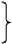
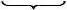
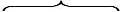
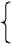

ров
ления обоего пола
чего
вающие земли

8,9 68,760,1
68,760,1
Перенесем теперь наш обзор земско-статистических данных в губернию, находящуюся в совершенно отличных условиях: Пермскую. Берем Красноуфимский уезд, по которому мы имеем группировку дворов по размеру земледельческого хозяйства *. Вот общие данные о земледельческой части уезда (23 574 двора - 129 439 душ об. пола).
| Группы домохозяев | % дво- ров | % насе- ления обоего пола | посева на 1 двор, десят. | % ко всему количеству посева | На 1 двор скота | % ко всему количеству скота | |||||
|---|---|---|---|---|---|---|---|---|---|---|---|
| рабо- чего | всего в перев. на крупный | ||||||||||
| Не обрабаты- вающие земли | 10,2 | 6,5 | - | - |  8,9 | 0,3 | 0,9 | 1,7 | 15,4 | ||
| Обраб. до 5 д. | 30,3 | 24,8 | 1,7 | 8,9 | 1,2 | 2,3 | 13,7 | ||||
| » 5-10 » | 27,0 | 26,7 | 4,7 | 22,4 | 2,1 | 4,7 | 24,5 | ||||
| » 10-20 » | 22,4 | 27,3 | 9,0 | 35,1 | 68,7 | 3,5 | 7,8 | 33,8 | 60,1
| ||
| » 20-50 » | 9,4 | 13,5 | 17,8 | 28,9 | 33,6 | 6,1 | 12,8 | 23,2 | 26,3 | ||
| » свыше 50 » | 0,7 | 1,2 | 37,3 | 4,7 | 11,2 | 22,4 | 3,1 | ||||
| Всего | 100 | 100 | 5,8 | 100 | 2,4 | 5,2 | 100 | ||||
И здесь, следовательно, несмотря на значительно меньшие размеры посева, мы видим те же самые отношения между группами, ту же концентрацию посева и скота в руках небольшой группы зажиточного крестьянства. Отношение между землевладением и действительным хозяйственным пользованием землей оказывается и здесь таким же, как в знакомых уже нам губерниях **.
| Группы домохозяев | Дворов | Населен. обоего пола | земли | |||
|---|---|---|---|---|---|---|
| Надельной | Арендо- ванной | Сданной | Всего земле- пользования | |||
| Не обрабатыв. земли | 10,2 | 6,5 | 5,7 | 0,7 | 21,0 | 1,6 |
| Обрабатыв. до 5 дес. | 30,3 | 24,8 | 22,6 | 6,3 | 46,0 | 10,7 |
| » 5-10 » | 27,0 | 26,7 | 26,0 | 15,9 | 19,5 | 19,8 |
| » 10-20 » | 22,4 | 27,3 | 28,3 | 33,7 | 10,3 | 32,8 |
| » 20-50 » | 9,4 | 13,5 | 15,5 | 36,4 | 2,9 | 29,8 |
| » более 50 » | 0,7 | 1,2 | 1,9 | 7,0 | 0,3 | 5,3 |
| Всего | 100 | 100 | 100 | 100 | 100 | 100 |
То же перебивание аренды наиболее обеспеченным зажиточным крестьянством; тот же переход надельной земли (посредством сдачи) от несостоятельного крестьянства к состоятельному, то же уменьшение роли надельной земли, происходящее в двух различных направлениях, на обоих полюсах деревни. Чтобы читатель мог конкретнее представить себе эти процессы, приводим данные об аренде в более подробном виде:
| Группы домохозяев | На один двор | % двор., арен- дующих пашни | На 1 аренд. двор пашни, дес. | % двор., арендующих покосы | На 1 арендующ. двор покоса, дес. | |
|---|---|---|---|---|---|---|
| Душ. обоего пола | Надельной земли | |||||
| Не обрабатыв. земли | 3,51 | 9,8 | 0,0 | 0,7 | 7,0 | 27,8 |
| Обрабат. до 5 дес. | 4,49 | 12,9 | 19,7 | 1,0 | 17,7 | 31,2 |
| » 5-10 » | 5,44 | 17,4 | 34,2 | 1,8 | 40,2 | 39,0 |
| » 10-20 » | 6,67 | 21,8 | 61,1 | 4,4 | 61,4 | 63,0 |
| » 20-50 » | 7,86 | 28,8 | 87,3 | 14,2 | 79,8 | 118,2 |
| » более 50 » | 9,25 | 44,6 | 93,2 | 40,2 | 86,6 | 261,0 |
| Всего | 5,49 | 17,4 | 37,7 | 6,0 | 38,9 | 65,0 |
В высших группах крестьянства (концентрирующих, как мы знаем, наибольшую долю аренды) аренда носит, следовательно, явный промышленный, предпринимательский характер, вопреки общераспространенному мнению экономистов-народников.
Переходим к данным о наемном труде, которые особенно ценны по этому уезду вследствие их полноты (именно: присоединены данные о найме поденных рабочих):
| Группы хозяйств | Число работ- ников муж. пола на 1 двор | Число хозяйств, нанимающих рабочих | % хозяйств, нанимающих рабочих | ||||||
|---|---|---|---|---|---|---|---|---|---|
| сроко- вых | на косьбу | на жатву | на мо- лотьбу | сроко- вых | на косьбу | на жатву | на мо- лотьбу | ||
| Не обрабатыв. | 0,6 | 4 | 16 | - | - | 0,15 | 0,6 | - | - |
| Обраб. до 5 д. | 1,0 | 51 | 364 | 340 | 655 | 0,7 | 5,1 | 4,7 | 9,2 |
| » 5-10 » | 1,2 | 268 | 910 | 1385 | 1414 | 4,2 | 14,3 | 20,1 | 22,3 |
| » 10-20 » | 1,5 | 940 | 1 440 | 2325 | 1371 | 17,7 | 27,2 | 43,9 | 25,9 |
| » 20-50 » | 1,7 | 1 107 | 1 043 | 1 542 | 746 | 50,0 | 47,9 | 69,6 | 33,7 |
| » более 50 » | 2,0 | 143 | 111 | 150 | 77 | 83,1 | 64,5 | 87,2 | 44,7 |
| Всего | 1,2 | 2 513 | 3 884 | 5 742 | 4 263 | 10,6 | 16,4 | 24,3 | 18,8 |
Мы видим здесь наглядное опровержение того мнения саратовских статистиков, будто наем поденных рабочих не является характерным признаком силы или слабости хозяйства. Напротив, это - в высшей степени характерный признак крестьянской буржуазии. По всем видам поденного найма мы наблюдаем повышение процента нанимающих хозяев вместе с повышением состоятельности, несмотря на то, что наиболее состоятельное крестьянство наилучше обеспечено и семейными рабочими. Семейная кооперация и здесь является базисом капиталистической кооперации. Далее, мы видим, что число хозяйств, нанимающих поденщиков, превышает число хозяйств, нанимающих сроковых рабочих, в 21/2 раза (в среднем по уезду) - берем наем поденщиков на жатву; статистики не дали, к сожалению, общего числа хозяйств, нанимающих поденщиков, хотя эти сведения и имелись. В трех высших группах из 7679 дворов нанимают батраков 2190 дворов, а поденщиков на жатву - 4017 дворов, т. е. большинство крестьян зажиточной группы. Разумеется, наем поденщиков - вовсе не особенность Пермской губернии, и если мы видели выше, что в зажиточных
группах крестьянства нанимают батраков от 2 до 6 и 9 десятых всего числа хозяев этих групп, то отсюда прямой вывод следующий. Большинство зажиточных крестьянских дворов пользуется наемным трудом в тех или других формах. Необходимым условием существования зажиточного крестьянства является образование контингента батраков и поденщиков. Наконец, чрезвычайно интересно отметить, что отношение числа хозяйств, нанимающих поденщиков, к числу хозяйств, нанимающих батраков, понижается от низших групп крестьянства к высшим. В низших группах число хозяйств, нанимающих поденщиков, всегда превышает, и во много раз, число хозяйств, нанимающих батраков. Наоборот, в высших группах число хозяйств, нанимающих батраков, оказывается иногда даже большим, чем число хозяйств, нанимающих поденщиков. Этот факт явно указывает на образование в высших группах крестьянства настоящих батрацких хозяйств, основанных на постоянном употреблении наемного труда; наемный труд распределяется равномернее по временам года, и получается возможность обходиться без более дорогого, без более хлопотливого найма поденщиков. Приведем кстати сведения о наемном труде по Елабужскому уезду Вятской губ. (зажиточное крестьянство здесь слито с средним).
| Группы домохозяев | Дворов | Душ об. пола | Наемных работников | Всего скота | Надельной пашни | % дворов | |||||
|---|---|---|---|---|---|---|---|---|---|---|---|
| срочных | поденных | арен- дующих | сдающих землю | ||||||||
| Число | % | % | Число | % | Число | % | % | % | |||
| Безлошадн. | 4258 | 12,7 | 8,3 | 56 | 3,2 | 16031 | 10,6 | 1,4 | 5,5 | 7,9 | 42,3 |
| С 1 лошад. | 12851 | 38,2 | 33,3 | 218 | 12,4 | 28015 | 18,6 | 24,5 | 27,6 | 23,7 | 21,8 |
| Многолош. | 16484 | 49,1 | 58,4 | 1481 | 84,4 | 106318 | 70,8 | 74,1 | 66,9 | 35,3 | 9,1 |
| Всего | 33593 | 100 | 100 | 1755 | 100 | 150364 | 100 | 100 | 100 | 27,4 | 18,1 |
Если допустить, что каждый поденщик работает по одному месяцу (28 дней), то окажется, что число поденщиков втрое выше числа сроковых рабочих. Отмечаем
мимоходом, что и в Вятской губернии мы видим знакомые уже нам отношения между группами и по найму рабочих и по аренде и сдаче земли.
Весьма интересны подворные данные об удобрении земли, приводимые пермскими статистиками. Вот результат обработки этих данных48:
| Группы домохозяев | % хозяйств, вообще вывозящих навоз | Вывозилось возов навоза на 1 двор (вывозящий) |
|---|---|---|
| Обрабатывающие до 5 дес. | 33,9 | 80 |
| » 5-10 » | 66,2 | 116 |
| » 10-20 » | 70,3 | 197 |
| » 20-50 » | 76,9 | 358 |
| » свыше 50 » | 84.3 | 732 |
| Всего | 51,7 | 176 |
Таким образом, и здесь мы видим глубокое различие в системе и способе хозяйства у бедноты и у зажиточных крестьян. И такое различие должно быть везде, ибо зажиточное крестьянство везде сосредоточивает в своих руках большую часть крестьянского скота и имеет больше возможности расходовать свой труд на улучшение хозяйства. Поэтому, если мы знаем, например, что пореформенное «крестьянство» в одно и то же время и создавало контингент безлошадных и бесскотных дворов и «возвышало сельскохозяйственную культуру», переходя к удобрению земли (подробно описываемому г-ном В. В. в его «Прогрессивных течениях в крестьян, хоз.», стр. 123-160 и сл.), то это с полной ясностью указывает нам, что «прогрессивные течения» знаменуют просто-напросто прогресс сельской буржуазии. Еще явственнее сказывается это на распределении улучшенных сельскохозяйственных орудий, о которых есть тоже данные в пермской статистике. Данные эти однако собраны не по всей земледельческой части уезда, а лишь по 3-му, 4-му и 5-му районам его, обнимающим 15 076 дворов из 23 574. Улучшенные орудия зарегистрированы следующие: веялок 1049, сортировок 225 и молотилок 354, всего 1628. Распределение по группам таково:
| Группы домохозяев | На 100 хозяйств приходится улучшенных орудий | Всего улучшенных орудий | % к итогу числа улучшенных орудий | |
|---|---|---|---|---|
| Не обрабатывающие | 0,1 | 2 | 0,1 | |
| Обрабатыв. до 5 дес. | 0,2 | 10 | 0,6 | |
| » 5-10 » | 1,8 | 60 | 3,7 | |
| » 10-20 » | 9,2 | 299 | 18,4 | |
| » 20-50 » | 50,4 | 948 | 58,3 | 77,2 |
| » более 50 » | 180,2 | 309 | 18,9 | |
| Всего | 10,8 | 1628 | 100 | |
Еще иллюстрация к тому «народническому» положению г-на В. В., будто улучшенными орудиями пользуются «все» крестьяне!
Данные о «промыслах» позволяют нам на этот раз выделить два основных типа «промыслов», знаменующие 1) превращение крестьянства в сельскую буржуазию (владение торгово-промышленным заведением) и 2) превращение крестьянства в сельский пролетариат (продажа рабочей силы, так называемые «земледельческие промыслы»). Вот распределение по группам этих «промышленников» диаметрально противоположного типа *:
| Группы домохозяев | На 100 хозяев приходится торгово-промышленных заведений | Распределение торгово-пром. заведений по группам в % к итогу | % хозяйств с земледельческими промыслами | |
|---|---|---|---|---|
| Не обрабатывающие | 0,5 | 1,7 | 52,3 | |
| Обрабатыв. до 5 дес. | 1,4 | 14,3 | 26,4 | |
| » 5-10 » | 2,4 | 22,1 | 5,0 | |
| » 10-23 » | 4,5 | 34,3 | 61.9 | 1,4 |
| » 20-50 » | 7,2 | 23,1 | 0,3 | |
| » более 50 » | 18,0 | 4,5 | - | |
| Всего | 2,9 | 100 | 16,2 | |
Сопоставление этих данных с данными о распределении посева и о найме рабочих показывает нам опять-
таки, что разложение крестьянства создает внутренний рынок для капитализма.
Мы видим также, как глубоко извращается действительность, когда самые разнородные типы занятий сливаются в одну кучу под именем «промыслов», или «заработков», когда «соединение земледелия с промыслами» изображается (как, например, у гг. В. В. и Н. -она) как нечто само себе равное, однородное и исключающее капитализм.
Укажем в заключение на однородность данных по Екатеринбургскому уезду. Если мы выделим из 59 709 дворов уезда безземельных (14 601 двор), имеющих только покос (15 679 дворов) и запускающих весь надел (1612 дворов), то получим об остальных 27 817 дворах такие данные: 20 тыс. дворов несеющих и малосеющих (до 5 дес.) имеют всего 41 тыс. десятин посева из 124 тыс. дес, т. е. менее 1/3. Напротив, 2859 зажиточных дворов (с посевом более 10 дес.) имеют 49 751 дес. посева, имеют 53 тыс. дес. аренды из всего количества 67 тыс. дес. (в том числе 47 тыс. дес. из 55 тыс. дес. арендованных крестьянских земель). Распределение двух противоположных типов «промыслов», а равно и дворов с батраками, оказывается по Екатеринбургскому уезду вполне однородным с распределением этих показателей разложения по Красноуфимскому уезду.
В нашем распоряжении находится 2 сборника по Елецкому и Трубчевскому уездам этой губернии, дающие группировку крестьянских дворов по количеству рабочих лошадей *.
Соединяя оба эти уезда вместе, приводим общие данные по группам.
| Группы домохозяев | % семей | % насе- ления об. пола | Надель- ной земли на двор | % земли | % арен- дующих дворов | % земли | Всего землеполь- зования | Голов скота (в пер. на крупный) на 1 двор | % всего скота | |||
|---|---|---|---|---|---|---|---|---|---|---|---|---|
| на- дель- ной | куп- чей | арен- дован- ной | сдан- ной | в % | на 1 двор | |||||||
| Безлошад. | 22,9 | 15,6 | 5,5 | 14,5 | 3,1 | 11,2 | 1,5 | 85,8 | 4,0 | 1,7 | 0,5 | 3,8 |
| С 1 лошад. | 33,5 | 29,4 | 6,7 | 28,1 | 7,2 | 46,9 | 14,1 | 10,0 | 25,8 | 7,5 | 2,3 | 23,7 |
| » 2-3 » | 36,4 | 42,6 | 9,6 | 43,8 | 40,5 | 77,4 | 50,4 | 3,0 | 49,3 | 13,3 | 4,6 | 51,7 |
| » 4 и бол. | 7,2 | 12,4 | 15,2 | 13,6 | 49,2 | 90,2 | 34,0 | 1,2 | 20,9 | 28,4 | 9,3 | 20,8 |
| Всего | 100 | 100 | 8,6 | 100 | 100 | 52,8 | 100 | 100 | 100 | 9,8 | 3,2 | 100 |
Отсюда видно, что общие отношения между группами и здесь те же самые, какие мы видели раньше (концентрация купчей и арендованной земли зажиточными, переход к ним земли от бедноты и т. д.). Совершенно однородны также отношения между группами и по отношению к наемному труду, к «промыслам» и к «прогрессивным течениям» в хозяйстве:
| Группы домохозяев | % хозяйств с наемными рабочими | % дворов с промыслами | На 100 хозяйств торг. и промышленн. заведений | Улучшенные орудия (по Елецкому уезду) | |
|---|---|---|---|---|---|
| На 100 хозяйств приходится орудий | % всего числа орудий | ||||
| Безлошадные | 0,2 | 59,6 | 0,7 | 0,01 | 0,1 |
| С 1 лош. | 0,8 | 37,4 | 1,1 | 0,2 | 3,8 |
| » 2-3 » | 4,9 | 32,2 | 2,6 | 3.5 | 42,7 |
| » 4 и более | 19,4 | 30,4 | 11,2 | 36,0 | 53,4 |
| Всего | 3,5 | 39,9 | 2,3 | 2,2 | 100 |
Итак, и в Орловской губернии мы видим разложение крестьянства на два полярно противоположных типа: с одной стороны, на сельский пролетариат (забрасывание земли и продажа рабочей силы), с другой стороны, на крестьянскую буржуазию (покупка земли, аренда ь значительных размерах, особенно аренда наделов,
улучшение хозяйства, наем батраков и поденщиков, опущенных здесь, присоединение к земледелию торгово-промышленных предприятий). Но размер земледельческого хозяйства у крестьян здесь вообще гораздо ниже, чем в вышеприведенных случаях; крупных посевщиков несравненно меньше, и разложение крестьянства, если судить по этим двум уездам, представляется поэтому более слабым. Мы говорим: «представляется» вот на каких основаниях: во-1-х, если здесь мы наблюдаем, что «крестьянство» превращается гораздо быстрее в сельский пролетариат; выделяя едва заметные группы сельских буржуа, то зато мы видели уже и обратные примеры, когда особенно заметным становится этот последний полюс деревни. Во-2-х, здесь разложение земледельческого крестьянства (мы ограничиваемся в этой главе именно земледельческим крестьянством) затемняется «промыслами», которые достигают особого развития (40% семей). А в «промышленники» и здесь попадает, рядом с большинством наемных рабочих, меньшинство торговцев, скупщиков, предпринимателей, хозяев и пр. В-З-х, здесь разложение крестьянства затемняется вследствие отсутствия данных о тех сторонах местного земледелия, которые всего сильнее связаны с рынком. Развитие торгового, рыночного земледелия направлено здесь не на расширение посевов для сбыта зерна, а на производство конопли. С этим продуктом связано здесь наибольшее количество торговых операций, а данные таблиц, приведенных в сборнике, не выделяют именно этой стороны земледелия у разных групп. «Конопляники доставляют главный доход крестьянам» (т. е. денежный доход. Сборник по Трубчевскому у., стр. 5 поселенных описаний и мн. др.), «на возделывание конопли обращено главное внимание крестьян... Весь навоз... идет на удобрение конопляников» (ibid., 87), «под коноплю» делаются всюду займы, коноплей уплачиваются долги (ibid., passim). Для удобрения конопляников зажиточные крестьяне покупают навоз у бедноты (Сборник по Орловскому у., т. VIII. Орел, 1895, стр. 105), конопляники сдаются и арендуются в своих и чужих общинах (ibid., 260),
обработкой конопли занята часть тех «промышленных заведений», о концентрации которых мы говорили. Ясно, насколько неполна та картина разложения, в которой нет сведений именно о главном торговом продукте местного земледелия *.
Сборники по Воронежской губернии отличаются особенной полнотой сведений и обилием группировок. Кроме обычной группировки по наделу мы имеем по нескольким уездам группировку по рабочему скоту, по работникам (по рабочим силам семей), по промыслам (не занимающиеся промыслами; занимающиеся промыслами: а) сельскохозяйственными, Ь) смешанными и с) торгово-промышленными), по батракам (хозяйства с нанимающимися в батраки; - без батраков и без нанимающихся в батраки; - с нанятыми батраками). Последпяя группировка проведена по наибольшему числу уездов, и на первый взгляд можно бы думать, что она наиболее пригодна для изучения разложения крестьянства. На деле однако это не так: группа хозяйств, отпускающих батраков, далеко не обнимает всего сельского пролетариата, ибо в нее не входят хозяйства, отпускающие поденщиков, чернорабочих, фабрично-заводских рабочих, рабочих по строительным и земляным работам, прислугу и т. д. Батраки составляют лишь часть наемных рабочих, поставляемых «крестьянством». Группа хозяйств, нанимающих батраков, тоже крайне неполна, ибо в нее не входят хозяйства, нанимающие поденщиков. Нейтральная группа
(не отпускающая и не нанимающая батраков) сливает вместе по каждому уезду десятки тысяч семей, соединяя тысячи безлошадных с тысячами многолошадных, соединяя арендующих землю и сдающих ее, соединяя земледельцев и неземледельцев, соединяя тысячи наемных рабочих и меньшинство хозяев и т. д. Общие «средние» для всей нейтральной группы получаются, например, от сложения вместе дворов безземельных или имеющих 3-4 дес. на 1 двор (надельной и купчей земли всего) с дворами, которые имеют свыше 25, 50 десятин надельной земли и прикупают в собственность десятки и сотни десятин земли (Сборник по Бобровскому уезду, стр. 336, гр. № 148; по Новохоперскому уезду, стр. 222), - от сложения вместе дворов с 0,8-2,7 штуками всего скота на семью и дворов с 12-21 штуками всего скота (ibid.). Понятно, что при помощи таких: «средних» нельзя представить разложения крестьянства, и нам приходится взять группировку по рабочему скоту, как наиболее приближающуюся к группировке по размерам земледельческого хозяйства. В нашем распоряжении находятся 4 сборника с такой группировкой (по Землянскому, Задонскому, Нижнедевицкому и Коротоякскому уездам), из которых мы должны выбрать Задонский уезд, ибо по остальным не дано отдельных сведений о купчей и сдаваемой земле по группам. Ниже мы приведем сводные данные о всех этих 4-х уездах, и читатель увидит, что выводы из них получаются те же самые. Вот общие данные о группах по Задонскому уезду (15 704 двора, 106 288 душ об. пола, 135 656 дес. надельной земли, 2882 дес. купчей, 24 046 дес. арендованной, 6482 дес. сданной земли). [См. таблицу на стр. 108. Ред.]
Отношения между группами и здесь однородны с предыдущими губерниями и уездами (концентрация купчей земли и аренды, переход надельной земли от сдающих ее несостоятельных к арендующим и зажиточным крестьянам и т. д.), но значение зажиточного крестьянства оказывается здесь несравненно более слабым. Крайне ничтожные размеры земледельческого хозяйства крестьян естественно выдвигают даже вопрос, относится
| Группы домо- хозяев | % дво- ров | На 1 двор душ об. пола | % насе- ления об. пола | Надель- ной земли на 1 двор, дес. | % земли | Всего земле- пользования | Всего обраба- тываемой земли | Всего скота на 1 двор | |||||
| надель- ной | купчей | арен- дован- ной | Сданной | На 1 двор | % | На 1 двор | % | ||||||
| Безлошадн. | 24,5 | 4,5 | 16,3 | 5,2 | 14,7 | 2 | 1,5 | 36,9 | 4,7 | 11,2 | 1,4 | 8,9 | 0,6 |
| С 1 лош. | 40,5 | 6,1 | 36,3 | 7,7 | 36,1 | 14,3 | 19,5 | 41,9 | 8,2 | 32,8 | 3,4 | 35,1 | 2,5 |
| «» 2-3 лош. | 31,8 | 8,7 | 40,9 | 11,6 | 42,6 | 35,9 | 54 | 19,8 | 14,4 | 45,4 | 5,8 | 47 | 5,2 |
| » 4 и более | 3,2 | 13,6 | 6,5 | 17,1 | 6,6 | 47,8 | 25 | 1,4 | 33,2 | 10,6 | 11,1 | 9 | 11,3 |
| Всего | 100 | 6,8 | 100 | 8,6 | 100 | 100 | 100 | 100 | 10,1 | 100 | 4 | 100 | 3,2 |
ли местное крестьянство к земледельцам, а не к «промышленникам»? Вот данные о «промыслах», - сначала о распределении их по группам.
| Группы домо- хозяев | Улучшенные орудия | % хозяйств | На 100 хозяйств торгово- промышл. заведе- ний | % хозяйств | % денежного дохода от | |||||
| На 100 хозяйств | % их к итогу | Нани- мающих батра- ков | Отпус- кающих батра- ков | С «про- мыс- лами» | Прода- вавших хлеб | Поку- павших хлеб | «про- мыс- лов» | Про- дажи земле- дель- ческих про- дук- тов |
||
| безлошадные | - | - | 0,2 | 29,9 | 1,7 | 94,4 | 7,3 | 70,5 | 87,1 | 10,5 |
| С 1 лош. | 0,05 | 2,1 | 1,1 | 15,8 | 2,5 | 89,6 | 31,2 | 55,1 | 70,2 | 23,5 |
| «» 2-3 лош. | 1,6 | 43,7 | 7,7 | 11 | 6,4 | 85,3 | 52,5 | 28,7 | 60 | 35,2 |
| «» 4 и более | 23 | 54,2 | 28,1 | 5,3 | 30 | 71,4 | 60 | 8,1 | 46,1 | 51,5 |
| Всего | 1,2 | 100 | 3,8 | 17,4 | 4,5 | 90,5 | 33,2 | 48,9 | 66 | 29 |
Распределение улучшенных орудий и двух противоположных типов «промыслов» (продажа рабочей силы и торгово-промышленное предпринимательство) и здесь таково же, как в вышерассмотренных данных. Громадный процент хозяйств с «промыслами», преобладание хозяйств, покупавших хлеб, над хозяйствами, продававшими хлеб, преобладание денежного дохода от «промыслов» над денежным доходом от земледелия *, - все это дает основание считать этот уезд скорее «промысловым», чем земледельческим. Посмотрим, однако, что это за промыслы? В «Сборнике оценочных сведений по крестьянскому землевладению в Землянском, Задонском, Коротоякском и Нижнедевицком уездах» (Воронеж, 1889) дан перечень всех профессий «промышленников» и местных и отхожих (всего 222 профессии), с распределением их на группы по наделу, с указанием размеров заработка в каждой профессии. Из этого
перечня видно, что громадное большинство крестьянских «промыслов» состоит в работе по найму. Из 24 134 «промышленников» в Задонском уезде - 14 135 батраков, возчиков, пастухов, чернорабочих, 1813 строительных рабочих, 298 городских, заводских и других рабочих, 446 находится в частном услужении, 301 нищий и т. д. Другими словами, громадное большинство «промышленников» - представители сельского пролетариата, наемные рабочие с наделом, продающие свою рабочую силу сельским и индустриальным предпринимателям *. Таким образом, если мы берем отношение между различными группами крестьянства в данной губернии или в данном уезде, то мы везде видим типичные черты разложения, как в многоземельных степных губерниях, с громадными сравнительно посевами крестьян, так и в наиболее малоземельных местностях, с миниатюрными размерами крестьянских «хозяйств»; несмотря на самое глубокое различие аграрных и сельскохозяйственных условий, отношение высшей группы крестьянства к низшей везде одинаково. Если же мы сравниваем различные местности, то в одних особенно рельефно сказывается образование из крестьян сельских предпринимателей, - а в других - образование сельского пролетариата. Само собой разумеется, что в России,
как и во всякой другой капиталистической стране, последняя сторона процесса разложения захватывает несравненно большее число мелких земледельцев (и, вероятно, большее число местностей), чем первая.
По трем уездам Нижегородской губернии - Княгининскому, Макарьевскому и Васильскому - данные земско-статистической подворной переписи сведены в групповую таблицу, разделяющую крестьянские хозяйства (только надельные и притом только крестьян, живущих в своей деревне) на 5 групп по рабочему скоту («Материалы к оценке земель Нижегородской губернии. Экономическая часть». Вып. IV, IX и XII. Нижн.-Новг. 1888, 1889, 1890).
Соединяя вместе эти три уезда, получаем следующие данные о группах хозяйств (в трех названных уездах данные эти охватывают 52 260 дворов, 294 798 душ об. пола. Надельной земли - 433 593 дес, купчей - 51 960 дес, арендованной - 86 007 дес. считая аренду всякой земли, и надельной и вненадельной, и пашни и покосов; сданной - 19 274 дес):
| Группы домохозяев | % дворов | Душ об. пола на 1 двор | % насе- ления об. пола | Надельная земля | Купчая земля | %к итогу земли | Все земле- пользование группы | Всего скота | |||||
| На 1 двор дес. | % к итогу | % к итогу | арен- дован- ной | сдан- ной | На 1 двор дес. | % китогу | На 1 двор штук | % к итогу | |||||
| Безлошадные | 30,4 | 4,1 | 22,2 | 5,1 | 18,6 | 5,7 | 3,3 | 81,7 | 4,4 | 13,1 | 0,6 | 7,2 | |
| С 1 лош. | 37,5 | 5,3 | 35,2 | 8,1 | 36,6 | 18,8 | 25,1 | 12,4 | 9,4 | 34,1 | 2,4 | 33,7 | |
| «» 2 «» | 22,5 | 6,9 | 27,4 | 10,5 | 28,5 | 29,3 | 38,5 | 3,8 | 13,8 | 30,2 | 4,3 | 34,9 | |
| «» 3 «» | 7,3 | 8,4 | 10,9 | 13,2 | 11,6 | 22,7 | 21,2 | 1,2 | 21 | 14,8 | 6,2 | 169,5 | |
| «» 4 и более | 2,3 | 10,2 | 4,3 | 16,4 | 4,7 | 23,5 | 11,9 | 0,9 | 34,6 | 7,8 | 9 | 7,7 | |
| Всего | 100 | 5,6 | 100 | 8,3 | 100 | 100 | 100 | 100 | 10,3 | 100 | 2,7 | 100 | |
И здесь, следовательно, мы видим, что зажиточное крестьянство, несмотря на то, что оно лучше обеспечено надельной землей (процентная доля надельной земли в высших группах выше процентной доли их населения), концентрирует купчую землю (у 9,6% зажиточных дворов - 46,2% купчей земли, тогда как у 2 ⁄ 3 дворов неимущего крестьянства менее четвертой части всей купчей земли), концентрирует и аренду, «собирает» и надельную землю, сдаваемую беднотой, и, благодаря всему этому, действительное распределение земли, находящейся в пользовании «крестьянства», оказывается совсем непохожим на распределение надельной земли. Безлошадные в действительности имеют в своем распоряжении меньшее количество земли, чем обеспеченный им законом надел. Однолошадные и двухлошадные увеличивают свое землевладение только на 10-30% (с 8,1 дес. до 9,4 дес, с 10,5 дес. до 13,8 дес), тогда как зажиточные крестьяне увеличивают свое землевладение в полтора - два раза. Тогда как различия между группами по количеству надельной земли были ничтожны, - различия между ними по действительным размерам земледельческого хозяйства оказываются громадными, как это видно из вышеприведенных данных о скоте и из нижеследующих данных о посеве:
| Группы домохозяев | Посев на 1 двор, дес. | % ко всему количеству посева | % дворов с батраками | % хозяев с торгово-промышл. заведениями* | % дворов с отхожими заработками |
|---|---|---|---|---|---|
| Безлошадные | 1,9 | 11,4 | 0,8 | 1,4 | 54,4 |
| С 1 лош. | 4,4 | 32,9 | 1,2 | 2,9 | 21,8 |
| » 2 » | 7,2 | 32,4 | 3,9 | 7,4 | 21,4 |
| » 3 » | 10,8 | 15,6 | 8,4 | 15,3 | 21,4 |
| » 4 и более | 16,6 | 7,7 | 17,6 | 25,1 | 23,0 |
| Всего | 5,0 | 100 | 2,6 | 5,6 | 31,6 |
Различие между группами по размеру посева оказывается еще больше, чем по размеру их действительного землевладения и землепользования, не говоря уже о раз-
личиях по размеру надела *. Это еще и еще раз показывает нам полную непригодность группировки по надельному землевладению, «уравнительность» которого превратилась теперь в одну юридическую фикцию. Остальные столбцы таблицы показывают, каким образом происходит в крестьянстве «соединение земледелия с промыслом»: зажиточное крестьянство соединяет торговое и капиталистическое земледелие (высокий процент дворов с батраками) с торгово-промышленными предприятиями, тогда как беднота соединяет продажу своей рабочей силы («отхожие заработки») с ничтожными размерами посевов, т. е. превращается в батраков и поденщиков с наделом. Заметим, что отсутствие правильного понижения процента дворов с отхожими заработками объясняется чрезвычайным разнообразием этих «заработков» и «промыслов» нижегородского крестьянства: помимо сельскохозяйственных рабочих, чернорабочих, строительных и судовых рабочих и пр., в число промышленников здесь входит сравнительно очень значительное число «кустарей», владельцев промышленных мастерских, торговцев, скупщиков и т. д. Понятно, что смешение столь различного типа «промышленников» нарушает правильность данных о «дворах с заработками» **.
К вопросу о различиях в земледельческом хозяйстве разных групп крестьян заметим, что в Нижегородской губернии «удобрение составляет одно из главнейших условий, определяющих степень производительности пахотных полей» (стр. 79 Сборника по Княгининскому уезду). Средний сбор ржи правильно повышается по мере увеличения удобрения: при 300-500 возах навоза на 100 дес. надела сбор ржи равен 47,1 меры с 1 дес, а при 1500 и более возов - 62,7 меры (стр. 84, ibid.).
Ясно поэтому, что различие между группами по размеру земледельческого производства должно быть еще выше, чем различие по размеру посева, и что нижегородские статистики делали большую ошибку, изучая вопрос об урожайности крестьянских полей вообще, а не полей несостоятельного и зажиточного крестьянства в отдельности.
Как заметил уже читатель, мы пользуемся при изучении разложения крестьянства исключительно земско-статистическими подворными переписями, если они охватывают более или менее значительные районы, если они дают достаточно подробные сведения о важнейших признаках разложения и если (что особенно важно) они обработаны так, чтобы можно было выделить различные группы крестьян по их хозяйственной состоятельности. Изложенные выше данные, относящиеся к 7 губерниям, исчерпывают земско-статистический материал, который удовлетворяет этим условиям и которым мы имели возможность пользоваться. В интересах полноты, укажем теперь вкратце и на остальные, менее полные, данные подобного же рода (т. е. основанные на сплошных подворных переписях).
По Демянскому уезду Новгородской губернии мы имеем групповую таблицу о крестьянских хозяйствах по числу лошадей («Материалы для оценки земельных угодий Новгородской губернии. Демянский уезд». Новгород, 1888). Здесь нет сведений об аренде и сдаче земли (в десятинах), но и те данные, которые имеются, свидетельствуют о полной однородности отношений между зажиточным и неимущим крестьянством в этой губернии по сравнению с другими губерниями. И здесь, например, от низшей группы к высшей (от безлошадных к имеющим 3 и более лошадей) повышается процент хозяйств с купчей и арендованной землей, несмотря на то, что многолошадные выше среднего обеспечены надельной землей. У 10,7% дворов с 3 и более лошадьми, при 16,1% всего населения, имеется 18,3%
всей надельной земли, 43,4% купчей земли, 26,2% арендованной земли (если можно судить о ней по размерам посева ржи и овса на арендованной земле), 29,4% всего числа «промышленных построек», тогда как у 51,3% безлошадных и однолошадных дворов, при 40,1% населения, лишь 33,2% надельной земли, 13,8% купчей земли, 20,8% арендованной (в указанном смысле), 28,8% «промышленных построек». Другими словами, и здесь зажиточное крестьянство «собирает» землю и соединяет с земледелием торгово-промышленные «промыслы», а неимущее - бросает землю и превращается в наемных рабочих (процент «лиц с промыслами» понижается от низшей группы к высшей, от 26,6% у безлошадных до 7,8% у имеющих 3 и более лошадей). Неполнота этих данных заставляет нас не включать их в нижеследующую сводку материала о разложении крестьянства.
По той же причине не включаем мы и данные о части Козелецкого уезда Черниговской губернии («Материалы для оценки земельных угодий, собранные Черниговским стат. отделением при губ. земской управе», т. V, Чернигов, 1882; по количеству рабочего скота сгруппированы данные о 8717 дворах черноземного района уезда). Отношения между группами и здесь те же самые: у 36,8% дворов без рабочего скота, при 28,8% населения - 21% собственной и надельной земли, 7% арендованной земли, зато 63% всего количества сданной этими 8717 дворами земли. У 14,3% дворов с 4 и более штуками рабочего скота, при 17,3% населения, 33,4% собственной и надельной земли, 32,1% арендной и лишь 7% сданной земли. К сожалению, остальные дворы (с 1-3 штуками рабочего скота) не подразделены на более мелкие группы.
В «Материалах по исследованию землепользования и хозяйственного быта сельского населения Иркутской и Енисейской губерний» есть весьма интересная групповая таблица (по числу рабочих лошадей) крестьянских и поселенских хозяйств в 4-х округах Енисейской губернии (т. III, Иркутск, 1893, стр. 730 и сл.). Весьма интересно наблюдать, что отношения зажиточного
сибиряка к поселенцу (а в этих отношениях вряд ли бы и самый ярый народник решился искать пресловутой общинности!) - в сущности совершенно тождественны с отношениями наших зажиточных общинников к их безлошадным и однолошадным «собра-там». Соединяя вместе поселенцев и крестьян-старожилов (такое соединение необходимо потому, что первые служат рабочей силой для вторых), мы получаем знакомые черты высших и низших групп. У 39,4% дворов низших групп (безлошадных, с 1 и 2 лошадьми), при 24% населения, лишь 6,2% всей запашки и 7,1% всего скота, тогда как у 36,4% дворов с 5 и более лошадей, при 51,2% населения, - 73% запашки и 74,5% всего скота. Последние группы (5-9, 10 и более лошадей), при 15-36 дес. запашки на 1 двор, прибегают в широких размерах к наемному труду (30-70% хозяйств с наемными рабочими), тогда как три низшие группы, при 0-0,2-3-5 дес. запашки на 1 двор, отпускают рабочих (20-35-59% хозяйств). Данные об аренде и сдаче земли представляют единственное, встреченное нами, исключение из правила (о концентрации аренды зажиточными), и это - такое исключение, которое подтверждает правило. Дело в том, что в Сибири нет именно тех условий, которые создали это правило, нет обязательного и «уравнительного» надела, нет сложившейся частной собственности на землю. Зажиточный крестьянин не покупает и не арендует земли, а захватывает ее (так было, по крайней мере, до сих пор); сдача-аренда земли носит скорее характер соседских обменов, и потому групповые данные об аренде и сдаче не показывают никакой законосообразности *.
По трем уездам Полтавской губернии мы можем приблизительно определить распределение посева (зная
число хозяйств с разными размерами посева, определенными в сборниках «от - до» такого-то числа десятин, и помножая число дворов каждого подразделения на среднюю величину посева между указанными пределами). Получатся такие данные о 76 032 дворах (все поселяне, без мещан) с 362 298 дес. посева: 31 001 дворов (40,8%) не имеют посева или сеют лишь до 3 дес. на 1 двор, у них всего 36 040 дес. посева (9,9%); 19 017 дворов (25%) сеют свыше 6 дес. на 1 двор, у них 209 195 дес. посева (57,8%). (См. «Сборники по хозяйственной статистике Полтавской губ.», уезды Константиноградский, Хорольский и Пирятинский49.) Распределение посева оказывается очень похожим на то, которое мы видели в Таврической губернии, несмотря на меньшие, в общем, размеры посевов. Понятно, что столь неравномерное распределение возможно лишь при концентрации купчей и арендованной земли в руках меньшинства. Мы не имеем полных данных об этом, ибо в сборниках нет группировки дворов по хозяйственной состоятельности, и должны ограничиться следующими данными по Константиноград-скому уезду. В главе о хозяйстве сельских сословий (гл. II, § 5 «Земледелие») составитель сборника сообщает такой факт: «Вообще, если разделить аренды на три разряда: аренды, в которых приходится на участника: 1) до 10 дес, 2) от 10 до 30 дес. и 3) более 30 дес, то для каждого из этих разрядов получатся следующие данные *:
| Относительное число | На 1 участника приходится земли, дес. | Из арендуемой земли сдается на сторону в % | ||
|---|---|---|---|---|
| участников | арендован. земли | |||
| Мелкие аренды (до 10 дес.) | 86,0 | 35,5 | 3,7 | 6,6 |
| Средние » (10-30 ») | 8,3 | 16,6 | 17,5 | 3,9 |
| Крупные (свыше 30 ») | 5,7 | 47,9 | 74,8 | 12,9 |
| Всего | 100 | 100 | 8,6 | 9,3 |
Комментарии излишни.
По Калужской губ. имеем лишь следующие, весьма отрывочные и неполные данные о посеве хлебов у 8626 дворов (около /го всего числа крестьянских дворов в губернии *).
| Группы дворов по размеру посева
Засевающие озимого, мер | |||||||
|---|---|---|---|---|---|---|---|
| Не сеющие | до 15 | 15-30 | 30-45 | 45-60 | свыше 60 | Всего | |
| % дворов | 7,4 | 30,3 | 40,2 | 13,3 | 5,3 | 3,0 | 100 |
| » душ об. пола | 3,3 | 25,4 | 40,7 | 17,2 | 8,1 | 5,3 | 100 |
| » посевной площади | - | 15,0 | 39,9 | 22,2 | 12,3 | 10,6 | 100 |
| » всего числа раб. лошад. | 0,1 | 21,6 | 41,7 | 19,8 | ,9,6 | 7,2 | 100 |
| » валового дохода от посева | - | 16,7 | 40,2 | 22,1 |  21,0 | 100 | |
| Десятин посева на 1 двор | - | 2,0 | 4,2 | 7,2 | 9,7 | 14,1 | - |
То есть, у 21,6% дворов, при 30,6% населения, - 36,6% рабочих лошадей, 45,1% посева, 43,1% валового дохода от посевов. Ясно, что и эти цифры говорят о концентрации купчей и арендованной земли зажиточным крестьянством.
По Тверской губ., несмотря на богатство сведений в сборниках, обработка подворных переписей крайне неполна; группировки дворов по хозяйственной состоятельности нет. Этим недостатком пользуется г. Вихляев в «Сборнике стат. свед. по Тверской губ.» (т. XIII, в. 2. «Крестьянское хозяйство». Тверь, 1897), чтобы отрицать «дифференциацию» крестьянства, усматривать стремление к «большей равномерности» и петь гимн «народному производству» (стр. 312) и «натуральному хозяйству». Г-н Вихляев пускается в самые рискованные и голословные суждения о «дифференциации», не только не приведя никаких точных данных о группах крестьян, но даже и не выяснив себе той элементар-
ной истины, что разложение происходит внутри общины, что поэтому толковать о «дифференциации» и брать исключительно группировки по общинам или по волостям - просто смешно *.
Для того, чтобы сравнить между собою и свести воедино вышеприведенные данные о разложении крестьянства, мы не можем, очевидно, брать абсолютные цифры и складывать их по группам: для этого требовались бы полные данные по целой группе районов и одинаковость приемов группировки. Мы можем сравнивать и сопоставлять только отношения между группами высшими и низшими (по владению землей, скотом, орудиями и т. д.). Отношение, выраженное, например, тем, что 10% дворов имеют 30% посева, абстрагирует различие абсолютных цифр и потому годно для сравнения со всяким подобным отношением любой местности. Но для такого сравнения надо выделить в другой местности тоже 10% дворов, не больше и не меньше. Между тем размеры групп в разных уездах и губерниях не равны. Значит, приходится дробить эти группы, чтобы взять по каждой местности одинаковую процентную долю дворов. Условимся брать 20% дворов для зажиточного крестьянства и 50% - для несостоятельного,
т. е. будем составлять из высших групп группу в 20% дворов, а из низших групп - группу в 50% дворов. Поясним этот прием на примере. Положим, что мы имеем пять групп такого размера от низшей к высшей: 30%, 25%, 20%, 15% и 10% дворов (S = 100%). Для составления низшей группы берем первую группу и 4/5, второй группы (30 + 25·4 ⁄ 5 = 50%), а для составления высшей берем последнюю группу и 2 ⁄ 3 предпоследней группы (10 + 15·2 ⁄ 3 = 20%), причем, разумеется, и процентные доли посева, скота, орудий и пр. определяются таким же образом. То есть, если процентные доли посева, приходящиеся на указанные доли дворов, будут таковы: 15%, 20%, 20%, 21% и 24% (S = 100%), тогда на долю нашей высшей группы в 20% дворов придется (24 + 21·2 ⁄ 3 = ) 38% посева, а на долю нашей низшей группы в 50% дворов придется (15 + 20·4 ⁄ 5 = ) 31% посева. Очевидно, что, дробя таким образом группы, мы ни на йоту не изменяем действительных отношений между высшими и низшими слоями крестьянства *. Необходимо же такое дробление, во-1-х, потому, что мы получаем таким образом вместо 4-5-6-7 различных групп три крупные группы с ясно определенными признаками ; во-2-х, только таким путем достигается сравнимость данных о разложении крестьянства в самых различных местностях с самыми различными условиями.
Для суждения о взаимоотношении групп мы берем следующие данные, имеющие наибольшую важность в вопросе о разложении: 1) число дворов; 2) число душ обоего пола крестьянского населения; 3) количество земли надельной; 4) купчей; 5) арендованной; 6) сданной в аренду; 7) всего землевладения или землепользования группы (надельная земля + купчая + аренда - сдача); 8) посева; 9) рабочего скота; 10) всего скота; 11) дворов с батраками; 12) дворов с заработками (выделяя, по возможности, те виды «заработков», среди которых преобладает работа по найму, продажа рабочей силы); 13) торгово-промышленных заведений, и 14) улучшенных земледельческих орудий. Отмеченные курсивом данные («сдача земли» и «заработки») имеют отрицательное значение, показывая упадок хозяйства, разорение крестьянина и превращение его в рабочего. Все остальные данные имеют положительное значение, показывая расширение хозяйства и превращение крестьянина в сельского предпринимателя.
По всем этим данным мы вычисляем для каждой группы хозяйств процентные отношения к итогу по уезду или по нескольким уездам одной губернии и затем определяем (по описанному нами приему), какая процентная доля земли, посева, скота и т. д. придется на долю 20-ти процентов дворов из высших групп и 50-ти процентов дворов из низших групп *.
Приводим составленную таким образом таблицу, которая охватывает данные по 21-му уезду 7-ми губерний о 558 570 крестьянских хозяйствах с населением в 3 523 418 душ обоего пола.
Таблица А *. Из высших групп составлена группа в 20% дворов
Таблица А [[правая половина таблицы при оцифровке объединена с левой, располагавшейся на стр. 122, и вся таблица вынесена в отдельный файл]].
Таблица Б *. Из низших групп составлена группа в 50% дворов
Таблица Б [[правая половина таблицы при оцифровке объединена с левой, располагавшейся на стр. 123, и вся таблица вынесена в отдельный файл]].
126
В. И. ЛЕНИН
Примечания к таблицам А и Б
1) По Таврической губ. сведения о сданной земле относятся только к двум уездам: Бердянскому и Днепровскому.
2) По той же губернии к улучшенным орудиям отнесены косилки и жатки.
3) По обоим уездам Самарской губернии вместо процента сданной земли взят процент сдающих надел бесхозяйных дворов.
4) По Орловской губернии количество сданной земли (а, след., и всего земли в пользовании) определено приблизительно. То же относится и к четырем уездам Воронежской губернии.
5) По Орловской губернии сведения об улучшенных орудиях имеются лишь по одному Елецкому уезду.
6) По Воронежской губернии вместо числа дворов с заработками взято (по трем уездам: Задонскому, Коротоякскому и Нижнедевицкому) число дворов, отпускающих батраков.
7) По Воронежской губернии сведения об улучшенных орудиях имеются лишь по двум уездам: Землянскому и Задонскому.
8) По Нижегородской губернии вместо дворов с «промыслами» вообще взяты дворы с отхожими промыслами.
9) По некоторым уездам вместо числа торгово-промышленных заведений пришлось взять число дворов с торгово-промышленными заведениями.
10) Когда в сборниках есть несколько граф о «заработках», - мы старались выделить те «заработки», которые наиболее точно выражают работу по найму, продажу рабочей силы.
11) Арендованная земля бралась, по возможности, вся: и надельная и вненадельная, и пашни и покосы.
12) Напоминаем читателю, что по Новоузенскому уезду исключены хуторяне и немцы; по Красноуфимскому у. взята только земледельческая часть уезда; по Екатеринбургскому у. исключены безземельные и имеющие только покос; по Трубчевскому уезду исключены пригородные общины; по Княгининскому уезду исключено промысловое село Большое Мурашкино и т. д. Исключения эти отчасти сделаны нами, отчасти обусловлены характером материала. Очевидно поэтому, что в действительности разложение крестьянства должно быть сильнее, чем это представлено в нашей таблице и диаграмме.
Для того, чтобы иллюстрировать эту сводную таблицу и сделать наглядным полную однородность отношений между высшими и низшими группами крестьянства в самых различных местностях, мы составили нижеследующую диаграмму, на которую нанесены процентные данные таблицы. Направо от столбца, определяющего процентные доли всего числа дворов, идет линия, показывающая положительные признаки хозяйственной состоятельности (расширение землевладения,
увеличение количества скота и т. д.), а слева идет линия, показывающая отрицательные признаки хозяйственной силы (сдача земли, продажа рабочей силы; эти столбцы оттенены особой штриховкой). Расстояние от верхней горизонтальной линии диаграммы до каждой сплошной кривой линии показывает долю зажиточных групп в общей сумме крестьянского хозяйства, а расстояние от нижней горизонтальной линии диаграммы до каждой пунктирной кривой линии показывает долю несостоятельных групп крестьянства в общей сумме крестьянского хозяйства. Наконец, чтобы яснее изобразить общий характер сводных данных, мы провели «среднюю» линию (определенную вычислением арифметических средних из тех процентных данных, которые занесены на диаграмму. «Средняя» линия для отличия от остальных окрашена в красный цвет). Эта «средняя» линия показывает нам, так сказать, типичное разложение современного русского крестьянства.
Теперь, чтобы подвести итог приведенным выше (§§ I-VII) данным о разложении, рассмотрим столбец за столбцом этой диаграммы.
Первый столбец направо от столбца, указывающего проценты дворов, отмечает долю населения, приходящегося на высшую и низшую группу. Мы видим, что везде состав семей у зажиточного крестьянства оказывается выше, а у несостоятельного - ниже среднего. О значении этого факта мы уже говорили. Добавим, что было бы неправильно брать за единицу для всех сопоставлений не двор, семью, а 1 душу населения (как любят делать народники). Если расход зажиточной семьи увеличивается вследствие большего состава семей, то, с другой стороны, масса расходов в болыпесемейном дворе сокращается (на постройки, на домашнее обзаведение и хозяйство и пр. и пр. Особенно подчеркивают выгодность в хозяйственном отношении больших семей Энгельгардт в «Письмах из деревни» и Трирогов в книге «Община и подать». СПБ. 1882). Поэтому брать за единицу сопоставлений 1 душу населения, не принимая во внимание этого сокращения расходов, - это значит искусственно и фальшиво
приравнивать положение «души» в большой и малой семье. Впрочем, диаграмма ясно показывает, что зажиточная группа крестьянства концентрирует гораздо большую долю земледельческого производства, чем это следовало бы по расчету на одну душу населения.
Следующий столбец - надельная земля. В распределении ее замечается наибольшая уравнительность, как это и должно быть в силу юридических свойств надела. Однако даже здесь начинается процесс вытеснения бедноты зажиточными: везде мы видим, что высшие группы владеют несколько большей долей надельной земли, чем их доля населения, а низшие группы - несколько меньшей. «Община» подается в сторону интересов крестьянской буржуазии. Но по сравнению с действительным землевладением, неравномерность в распределении надельной земли еще совершенно ничтожна. Распределение надела не дает (как это ясно видно из диаграммы) никакого понятия о действительном распределении земли и хозяйства *.
Далее - столбец о купчей земле. Повсюду она концентрируется зажиточными: пятая часть дворов держит в своих руках около 6 или 7 десятых всех крестьянских купчих земель, тогда как на долю половины дворов бедноты приходится maximum 15%! Можно судить поэтому, какое значение имеют «народнические» хлопоты о том, чтобы «крестьянство» могло покупать как можно больше земли и как можно дешевле.
Следующий столбец - аренда. И здесь мы видим везде концентрацию земли зажиточными (на одну пятую долю дворов 5-8 десятых всей арендованной земли), которые к тому же снимают землю дешевле, как мы видели выше. Это перебивание аренды крестьянской буржуазией наглядно доказывает, что «крестьянская аренда» носит промышленный характер (покупка земли для продажи продукта) *. Говоря это, мы вовсе
однако не отрицаем факта аренды из нужды. Напротив, диаграмма показывает нам совершенно иной характер аренды у бедноты, которая цепляется за землю (на 1/2 дворов 1-2 десятых всей аренды). Есть крестьянин и крестьянин.
Противоречивое значение аренды в «крестьянском хозяйстве» особенно выступает при сличении столбца об аренде со столбцом о сдаче земли (первый столбец слева, т. е. среди отрицательных признаков). Здесь мы видим как раз обратное: главные сдатчики земли - низшие группы (на 1/2 дворов 7-8 десятых сданной земли), которые стремятся отделаться от надела, переходящего (вопреки запрещениям и стеснениям закона) в руки хозяев. Итак, когда нам говорят, что «крестьянство» арендует землю и «крестьянство» же сдает землю, то мы знаем, что первое относится главным образом к крестьянской буржуазии, второе - к крестьянскому пролетариату.
Отношение купли, аренды и сдачи земли к наделу определяет и действительное землевладение групп (столбец 5-й справа). Везде мы видим, что действительное распределение всей находящейся в распоряжении крестьян земли не имеет уже ничего общего с «уравнительностью» надела. На долю 20% дворов приходится от 35% до 50% всей земли, а на долю 50% дворов - от 20% до 30%. В распределении посева (следующий столбец) оттеснение высшею группой низшей выступает еще резче, - вероятно, потому, что неимущее крестьянство
часто не в состоянии хозяйственно пользоваться своей землей и забрасывает ее. Оба столбца (о всем землевладении и о посеве) показывают, что покупка и аренда земли ведут к уменьшению доли низших групп в общей системе хозяйства, т. е. к оттеснению их зажиточным меньшинством. Это последнее играет уже теперь главенствующую роль в крестьянском хозяйстве, сосредоточивая в своих руках почти такую же долю посева, как и все остальное крестьянство, вместе взятое.
Два следующие столбца показывают распределение в крестьянстве рабочего скота и всего скота. Процентные доли скота очень незначительно отличаются от процентных долей посева: это и не могло быть иначе, так как количество рабочего скота (а также и всего скота) определяет размер посева и в свою очередь определяется им.
Следующий столбец показывает долю разных групп крестьянства в общей сумме торговых и промышленных заведений. Пятая часть дворов (зажиточная группа) сосредоточивает около 1/2 этих заведений, a 1/2 дворов бедноты - лишь около 1/5*, то есть «промыслы», выражающие превращение крестьянства в буржуазию, сосредоточиваются преимущественно в руках наиболее состоятельных земледельцев. Зажиточные крестьяне вкладывают, следовательно, капитал и в земледелие (покупка земли, аренда, наем рабочих, улучшение орудий и пр.), и в промышленные заведения, и в торговлю, и в ростовщичество: торговый и предпринимательский капитал находятся в тесной связи, и от окружающих условий зависит, какая из этих форм капитала получает преобладание.
Данные о дворах с «заработками» (первый столбец слева, в числе отрицательных признаков) характеризуют тоже «промыслы», имеющие однако противоположное значение, знаменующие превращение крестьянина в пролетария. Эти «промыслы» сосредоточены в руках бедноты (на 50% дворов 60-90% всего числа дворов
с заработками), тогда как зажиточные группы принимают в них ничтожное участие (не надо забывать, что мы не могли точно отделить хозяев от рабочих и в этом разряде «промышленников»). Стоит сопоставить данные о «заработках» с данными о «торгово-промышленных заведениях», чтобы видеть полную противоположность двух типов «промыслов», чтобы понять, какую невероятную путаницу создает обычное смешение этих типов.
Дворы с батраками оказываются везде сосредоточенными в группе зажиточного крестьянства (на 20% дворов 5-7 десятых всего числа батрацких хозяйств), которое (несмотря на свою болыпесемейность) не может существовать без «дополняющего» его класса сельскохозяйственных рабочих. Мы видим здесь наглядное подтверждение тому положению, которое высказано было выше: именно, что сопоставлять число батрацких хозяйств с общим числом крестьянских «хозяйств» (в том числе и с «хозяйствами» батраков) - нелепо. Гораздо правильнее сопоставлять число батрацких хозяйств с одной пятой долей крестьянских дворов, ибо зажиточное меньшинство сосредоточивает около 3/5 или даже 2/3 всего числа батрацких хозяйств. Предпринимательский наем рабочих в крестьянстве далеко превосходит наем рабочих из нужды, по недостатку семейных рабочих: на долю 50% неимущего и малосемейного крестьянства падает лишь около 1/10 всего числа батрацких хозяйств (и здесь, впрочем, в число неимущих попали лавочники, промышленники и пр., нанимающие рабочих вовсе не из нужды).
Последний столбец, показывающий распределение улучшенных орудий, мы могли бы озаглавить, по примеру г. В. В., так: «прогрессивные течения в крестьянском хозяйстве». Наиболее «справедливым» оказывается распределение этих орудий в Новоузен-ском уезде Самарской губернии, где у пятой части зажиточных дворов - только 73 орудия из 100, а у половины дворов бедноты - целых три штуки из сотни.
Переходим к сравнению различных местностей по степени крестьянского разложения. На диаграмме явственно выделяются в этом отношении два рода
местностей: в Таврической, Самарской, Саратовской и Пермской губерниях разложение земледельческого крестьянства оказывается заметно сильнее, чем в Орловской, Воронежской, Нижегородской губерниях. Линии первых четырех губерний идут на диаграмме ниже средней красной линии, а линии последних трех губерний идут выше средней, т. е. показывают меньшее сосредоточение хозяйства в руках зажиточного меньшинства. Первого рода местности - наиболее многоземельные и строго земледельческие (в Пермской губернии выделены земледельческие части уездов), с экстенсивным характером земледелия. При таком характере земледелия разложение земледельческого крестьянства легко учитывается и сказывается поэтому наглядно. Наоборот, в местностях второго рода мы видим, с одной стороны, такое развитие торгового земледелия, которое нашими данными не учитывается, например, посевы конопли в Орловской губернии. С другой стороны, мы видим здесь громадное значение «промыслов», как в смысле работы по найму (Задонский уезд Воронежской губ.), так и в смысле неземледельческих занятий (Нижегородская губерния). Значение обоих этих обстоятельств в вопросе о разложении земледельческого крестьянства громадно. О первом (различия формы торгового земледелия и сельскохозяйственного прогресса в различных местностях) мы уже говорили. Значение второго (роль «промыслов») не менее очевидно. Если в данной местности масса крестьянства состоит из батраков, поденщиков или промысловых наемных рабочих с наделом, то разложение земледельческого крестьянства выразится здесь, разумеется, очень слабо *. Но для правильного представления о деле надо сопоставить этих типичных представителей сельского пролетариата с типичными представителями крестьянской буржуазии. Воронежский поденщик с наделом, уходящий на «заработки» на юг, должен быть сопоставлен с таврическим крестья-
нином, производящим громадные посевы. Калужский, нижегородский, ярославский плотник должен быть сопоставлен с ярославским, московским огородником или крестьянином, держащим скот для продажи молока, и т. д. Точно так же, если масса местного крестьянства занята обрабатывающей промышленностью, получая от своих наделов лишь небольшую часть средств к жизни, - то данные о разложении земледельческого крестьянства должны быть дополнены данными о разложении промыслового крестьянства. В V главе мы и займемся этим последним вопросом, теперь же нас занимает лишь разложение типично земледельческого крестьянства.
Мы показали, что отношения между высшей и низшей группами крестьянства отмечаются именно теми чертами, которые характерны для отношений сельской буржуазии к сельскому пролетариату, - что эти отношения замечательно однородны в самых различных местностях с самыми различными условиями; - что даже числовые выражения этих отношений (т. е. процентные доли групп в общем количестве посева, скота и пр.) колеблются в очень небольших, сравнительно, пределах. Естественно является вопрос: насколько эти данные об отношениях между группами в разных местностях можно утилизировать для составления представления о группах, на которые распадается все русское крестьянство? Другими словами: по каким сведениям можно судить о составе и взаимоотношении высшей и низшей группы во всем русском крестьянстве?
Сведений этих у нас очень мало, так как в России не производится сельскохозяйственных переписей, которые бы подвергали массовому учету все земледельческие хозяйства страны. Единственный материал для суждения о тех хозяйственных группах, на которые распадается наше крестьянство, это - сводные данные земской статистики и военно-конской переписи о распределении рабочего скота (или лошадей) между
крестьянскими дворами. Как ни скуден этот материал, тем не менее и из него возможны небезынтересные выводы (конечно, очень общие, приблизительные, валовые), особенно благодаря тому, что отношения между многолошадным и малолошадным крестьянством были уже подвергнуты анализу и оказались замечательно однородными в самых различных местностях.
По данным «Сводного сборника хозяйственных сведений по земским подворным переписям» г-на Благовещенского (т. I. «Крестьянское хозяйство». М. 1893)51, земские переписи охватили 123 уезда в 22 губерниях с 2 983 733 крестьянскими дворами и 17 996 317 душами об. пола населения. Но данные о распределении дворов по рабочему скоту не везде однородны. Именно, в трех губерниях мы должны выкинуть 11 уездов *, по которым распределение дано не на четыре, а только на три группы. По остальным же 112 уездам в 21 губернии мы получили следующие сводные данные, относящиеся почти к 2 1/2 миллионам дворов с 15 миллионами населения:
| Группы хозяйств | Дворов | % дворов | У них голов рабочего скота ** | % всего рабочего скота | На 1 двор голов рабочего скота | |
|---|---|---|---|---|---|---|
| Без раб. скота | 613 238 | 24,7 | 53,3 | - | - | - |
| С 1 гол. раб. скота | 712 256 | 28,6 | 712 256 | 18,6 | 1 | |
| » 2 » » » | 645 900 | 26,0 | 1 291 800 | 33,7 | 2 | |
| » 3 и более | 515 521 | 20,7 | 1 824 969 | 47,7 | 3,5 | |
| Всего | 2 486 915 | 100 | 3 829 025 | 100 | 1.5 | |
Эти данные охватывают немногим менее четвертой части всего числа крестьянских дворов в Европейской России («Свод статистических материалов, касающихся экономического положения сельского населения Европейской России» - издание канцелярии комитета министров. СПБ. 1894 - считает в 50 губ. Европейской России 11 223 962 двора в волостях, в том числе крестьянских 10 589 967 дворов). По всей России мы имеем
данные о распределении лошадей между крестьянами в «Статистике Российской империи. XX. Военно-конская перепись 1888 г.» (СПБ. 1891) и тоже: «Стат. Росс. имп. XXXI. Военно-конская перепись 1891 г.» (СПБ. 1894). Первое издание содержит обработку данных, собранных в 1888 г. о 41 губ. (в том числе 10 губ. Царства Польского), а второе - о 18 губ. Европ. России плюс Кавказ, Калмыцкая степь и Область Войска Донского.
Выделяя 49 губерний Европ. России (по Донской области сведения не полны) и соединяя вместе данные 1888 и 1891 годов, получаем следующую картину распределения всего числа лошадей, принадлежащих крестьянам в сельских обществах.
| Группы х о з я й с т в | Крестьянских дворов | У них лошадей | На 1 двор приходится лошадей | ||||
|---|---|---|---|---|---|---|---|
| всего | в % | всего | в % | ||||
| Безлошадные | 2 777 485 | 27,3 | 55,9 | - | - | - | |
| С 1 лошадью | 2 909 042 | 28,6 | 2 909 042 | 17,2 | 1 | ||
| » 2 лошадьми | 2 247 827 | 22,1 | 4 495 654 | 26,5 | 2 | ||
| » 3 » | 1 072 298 | 10,6 | 22,0 | 3 216 894 | 18,9 | 56,3 | 3 |
| » 4 и более | 1 155 907 | 11,4 | 6 339 198 | 37,4 | 5,4 | ||
| Всего | 10 162 559 | 100 | 16 960 788 | 100 | 1,6 | ||
Итак, по всей России распределение рабочих лошадей в крестьянстве оказывается очень близким к той «средней» величине разложения, которую мы вывели выше на нашей диаграмме. В действительности разложение оказывается даже несколько глубже: в руках 22-х процентов дворов (2,2 миллиона дворов из 10,2 миллионов) сосредоточено 91/2 миллионов лошадей из 17-ти миллионов, т. е. 56,3% всего числа. Громадная масса в 2,8 миллиона дворов совсем обделена, а у 2,9 миллиона однолошадных дворов лишь 17,2% всего числа лошадей *.
Опираясь на выведенные выше законосообразности в отношениях между группами, мы можем теперь определить настоящее значение этих данных. Если пятая доля дворов сосредоточивает половину всего числа лошадей, то отсюда безошибочно можно заключить, что в ее руках не менее (а вероятно более) половины всего земледельческого производства крестьян. Такая концентрация производства возможна только при концентрации в руках этого состоятельного крестьянства большей части купчих земель и крестьянской аренды как вненадельных, так и надельных земель. Именно это состоятельное меньшинство главным образом покупает и арендует земли, несмотря на то, что оно, наверное, наилучше обеспечено надельной землей. Если «средний» русский крестьянин в самый хороший год едва-едва сводит концы с концами (да и то неизвестно, сводит ли), то это состоятельное меньшинство, обеспеченное значительно выше среднего, не только оплачивает все расходы самостоятельным хозяйством, но и получает избытки. А это значит, что оно является товаропроизводителем, что оно производит земледельческие продукты на продажу. Мало того: оно превращается в сельскую буржуазию, соединяя с сравнительно крупным земельным хозяйством торгово-промышленные предприятия, - мы видели, что именно такого рода «промыслы» наиболее типичны для русского «хозяйственного» мужика. Несмотря на наибольший размер семей, на наибольшее число семейных работников (состоятельное крестьянство всегда характеризуется этими признаками, и на 1/5 долю дворов должна прийтись большая доля населения, примерно около 3/10), - это состоятельное меньшинство в наибольших размерах пользуется трудом батраков и поденщиков. Из всего числа русских крестьянских хозяйств, прибегающих к найму батраков и поденщиков, значительное большинство должно прийтись на долю этого состоятельного меньшинства. Мы вправе сделать этот вывод как на основании предыдущего анализа, так и из сопоставления доли населения в этой группе с долей рабочего скота, а, следовательно, с долей посева и хозяйства
вообще. Наконец, только это состоятельное меньшинство может принимать прочное участие в «прогрессивных течениях крестьянского хозяйства»52. Таково должно быть отношение этого меньшинства к остальному крестьянству, но само собою разумеется, что в зависимости от различия аграрных условий, систем сельского хозяйства и форм торгового земледелия это отношение принимает различный вид и проявляется иначе *. Одно дело - основные тенденции крестьянского разложения, другое дело - формы его в зависимости от различных местных условий.
Положение безлошадного и однолошадного крестьянства как раз обратное. Мы видели выше, что земские статистики и последнее (не говоря уже о первом) относят к сельскому пролетариату. Поэтому вряд ли есть преувеличение в нашем примерном расчете, относящем к сельскому пролетариату всех безлошадных и до ЪЦ однолошадных крестьян (около 1/2 всего числа дворов). Это крестьянство наименее обеспечено надельной землей, зачастую сдает ее по неимению инвентаря, семян и пр. Из общей крестьянской аренды и покупки земель ему перепадают жалкие крупицы. Своим хозяйством ему никогда не прокормиться, и главным источником средств к жизни являются у него «промыслы» или «заработки», т. е. продажа своей рабочей силы. Это - класс наемных рабочих с наделом, батраков, поденщиков, чернорабочих, строительных рабочих и пр. и пр.
Военно-конские переписи 1896 и 1899-1901 годов позволяют теперь сравнить новейшие данные с приведенными выше.
Соединяя 5 южных губерний (1896) и 43 остальных (1899-1900), получаем по 48 губерниям Европейской России следующие данные:
| Группы хозяйств | Крестьянских дворов | У них лошадей | На 1 двор приходится лошадей | ||||
|---|---|---|---|---|---|---|---|
| всего | в % | всего | в % | ||||
| Безлошадные | 3242462 | 29,2 | 59,5 | - | - | - | |
| С 1 лош. | 3361778 | 30,3 | 3361778 | 19,9 | 1 | ||
| » 2 » | 2446731 | 22,0 | 4893462 | 28,9 | 2 | ||
| » 3 » | 1047900 | 9,4 | 18,5 | 3143700 | 18,7 | 51,2 | 3 |
| » 4 и более | 1013416 | 9,1 | 5476503 | 32,5 | 5,4 | ||
| Всего | 11112287 | 100 | 16875443 | 100 | 1,5 | ||
За 1888-1891 годы мы привели данные по 49 губерниям. Из них нет новейших сведений только по одной, именно Архангельской, губернии. Вычитая относящиеся к ней данные из приведенных выше, получим по тем же 48-ми губерниям за 1888-1891 годы такую картину:
| Группы хозяйств | Крестьянских дворов | У них лошадей | На 1 двор приходится лошадей | ||||
|---|---|---|---|---|---|---|---|
| всего | в % | всего | в % | ||||
| Безлошадные | 2765970 | 27,3 | 55,8 | - | - | - | |
| С 1 лош. | 2885192 | 28,5 | 2885192 | 17,1 | 1 | ||
| » 2 » | 2240574 | 22,2 | 4481148 | 26,5 | 2 | ||
| » 3 » | 1070250 | 10,6 | 22,0 | 3210750 | 18,9 | 56,4 | 3 |
| » 4 и более | 1154674 | 11,4 | 6333106 | 37,5 | 5,5 | ||
| Всего | 10116660 | 100 | 16910196 | 100 | 1,6 | ||
Сравнение 1888-1891 и 1896-1900 гг. показывает растущую экспроприацию крестьянства. Число дворов увеличилось почти на 1 миллион. Число лошадей уменьшилось, хотя и очень слабо. Число безлошадных дворов
возросло особенно быстро, и процент их поднялся с 27,3% до 29,2%. Вместо 5,6 миллиона бедноты (безлошадные и однолошадные) мы имеем уже 6,6 млн. Весь прирост числа дворов пошел на увеличение числа дворов бедноты. Процент богатых по числу лошадей дворов уменьшился. Вместо 2,2 млн. многолошадных мы имеем только 2,0 млн. Число средних и зажиточных дворов вместе (с 2 и более лош.) осталось почти без изменения (4465 тыс. в 1888-1891 гг., 4508 тыс. в 1896-1900 гг.).
Итак, выводы из этих данных получаются следующие.
Рост нищеты и экспроприации крестьянства не подлежит сомнению.
Что касается соотношения между высшей и низшей группой крестьянства, то это соотношение почти не изменилось. Если мы, по приемам, описанным выше, составим низшие группы в 50% дворов и высшие в 20% дворов, то получим следующее. В 1888-1891 годах у 50% дворов бедноты было 13,7% лошадей. У 20% богачей - 52,6%. В 1896-1900 годах у 50% дворов бедноты было тоже 13,7% общего числа крестьянских лошадей, а у 20% богачей - 53,2% общего числа лошадей. Соотношение групп, следовательно, почти не изменилось.
Наконец, все крестьянство в целом стало беднее лошадьми. И число и процент многолошадных уменьшились. С одной стороны, это знаменует, видимо, упадок всего крестьянского хозяйства в Европ. России. С другой стороны, нельзя забывать, что в России число лошадей в сельском хозяйстве ненормально высоко по отношению к культурной площади. В мелкокрестьянской стране это и не могло быть иначе. Уменьшение числа лошадей является, след., до известной степени «восстановлением нормального отношения рабочего скота к количеству пашни» у крестьянской буржуазии (ср. рассуждения об этом г-на В. В. выше, в главе II, § I).
Здесь уместно будет коснуться рассуждений об этом вопросе в новейших сочинениях г. Вихляева («Очерки русской с.-х. действительности». СПБ. изд. журнала
«Хозяин») и г. Черненкова («К характеристике крестьянского хозяйства». Вып. I. M. 1905). Они так увлеклись пестротой цифр о распределении лошадей в крестьянстве, что превратили экономический анализ в статистическое упражнение. Вместо изучения типов крестьянского хозяйства (поденщик, средний крестьянин, предприниматель) они изучают, как любители, бесконечные столбцы цифр, точно задавшись целью удивить мир своим арифметическим усердием.
Только благодаря такой игре в цифирьки г. Черненков и мог сделать мне такое возражение, будто я «предвзятым» образом толкую «дифференциацию», как новое (а не старое) и почему-то непременно капиталистическое явление. Вольно же было г. Черненкову думать, будто я делаю выводы из статистики, забывая экономику ! будто я доказываю что-либо одним лишь изменением в числе и распределении лошадей! Чтобы осмысленно взглянуть на разложение крестьянства, надо взять все в целом: и аренду, и покупку земель, и машины, и заработки, и рост торгового земледелия, и наемный труд. Или, может быть, для г. Черненкова это тоже не «новые» и не «капиталистические» явления?
Чтобы покончить с вопросом о разложении крестьянства, рассмотрим вопрос еще с другой стороны - по наиболее конкретным данным о крестьянских бюджетах. Мы увидим таким образом наглядно всю глубину различия между теми типами крестьянства, о которых у нас идет речь.
В приложении к «Сборнику оценочных сведений по крестьянскому землевладению в Землянском, Задонском, Коротоякском и Нижнедевицком уездах» (Воронеж, 1889) даны «статистические данные о составе и бюджетах типичных хозяйств», отличающиеся чрезвычайной полнотой *. Из 67 бюджетов мы опускаем один,
как совершенно неполный (бюджет № 14 по Коротоякскому уезду), а остальные делим на 6 групп по рабочему скоту: а - без лошади; б - cl лош.; в - с 2 лош.; г - с 3 лош.; д - с 4 лош. и е - с 5 и более лошадьми (ниже для означения групп мы употребляем лишь эти литеры а - е). Группировка по этому признаку, правда, не вполне пригодна для данной местности (ввиду громадного значения «промыслов» в хозяйстве и низших и высших групп), но нам приходится взять ее ради сравнимости бюджетных данных с вышеразобранными данными подворных переписей. Такая сравнимость достижима единственно при разделении «крестьянства» на группы, тогда как общие и огульные «средние» имеют совершенно фиктивное значение, как мы уже видели и увидим ниже *. Отметим кстати здесь то интересное явление, что «средние» бюджетные данные почти всегда характеризуют хозяйство, стоящее выше среднего типа, т. е. изображают действительность в лучшем свете, чем она есть **. Происходит это, вероятно, оттого, что самое понятие «бюджет» предполагает мало-мальски уравновешенное хозяйство, а таковое нелегко найти среди бедноты. Для иллюстрации сопоставим распределение дворов по рабочему скоту по бюджетным и по остальным данным:
| Группы хозяйств | всего | Число бюджетов в процентах | |||||
|---|---|---|---|---|---|---|---|
| вообще | в % | в 4 у. Воро- нежск. губ. | в 9 у. Воро- нежск. губ. | в 112 уез- дах 21 губ. | в 49 гу- берн. Европ. России | ||
| Без рабоч. скота | 12 | 18,18 | 17,9 | 21,7 | 24,7 | 27,3 | |
| С 1 штукой » | 18 | 27,27 | 34,7 | 31,9 | 28,6 | 28,6 | |
| » 2 штуками » | 17 | 25,76 | 28,6 | 23,8 | 26,0 | 22,1 | |
| » 3 » » | 9 | 13,64 | 28,79 | 18,8 | 22,6 | 20,7 | 22,0
|
| » 4 » » | 5 | 7,575 | |||||
| » 5 и более » | 5 | 7,575 | |||||
| Всего | 66 | 100 | 100 | 100 | 100 | 100 | |
Ясно отсюда, что пользоваться бюджетными данными можно лишь посредством вывода средних для каждой отдельной группы крестьянства. Такой обработке мы и подвергли названные данные. Излагаем их по 3-м рубрикам: (А) общие результаты бюджетов; (Б) характеристика земледельческого хозяйства и (В) характеристика жизненного уровня.
(А) Общие данные о величине расходов и доходов таковы:
| Число душ об. пола на 1 семью | Валовой | Чистый доход | Денежный | Баланс | Сколько должен рублей | Недоимка | |||
|---|---|---|---|---|---|---|---|---|---|
| доход | расход | доход | расход | ||||||
| а) | 4,08 | 118,10 | 109,08 | 9,02 | 64,57 | 62,29 | +2,28 | 5,83 | 16,58 |
| б) | 4,94 | 178,12 | 174,26 | 3,86 | 73,75 | 80,99 | -7,24 | 11,16 | 8,97 |
| в) | 8,23 | 429,72 | 379,17 | 50,55 | 196,72 | 165,22 | +31,50 | 13,73 | 5,93 |
| г) | 13,00 | 753,19 | 632,36 | 120,83 | 318,85 | 262,23 | +56,62 | 13,67 | 2,22 |
| д) | 14,20 | 978,66 | 937,30 | 41,36 | 398,48 | 439,86 | -41,38 | 42,00 | - |
| е) | 16,00 | 1766,79 | 1593,77 | 173,02 | 1047,26 | 959,20 | +88,06 | 210,00 | 6 |
| 8,27 | 491,44 | 443,00 | 48,44 | 235,53 | 217,70 | +17,83 | 28,60 | 7,74 | |
Таким образом, разница в размерах бюджетов по группам оказывается громадная; если даже оставить в стороне крайние группы, все же бюджет у д более чем впятеро выше, чем у б, тогда как состав семьи у д менее чем втрое больше, чем у б.
Посмотрим на распределение расходов *:
| На пищу | На остальное личное потребление | На хозяйство | Подати и повинности | Всего | ||||||
|---|---|---|---|---|---|---|---|---|---|---|
| Руб. | % | Руб. | % | Руб. | % | Руб. | % | Руб. | % | |
| а) | 60,98 | 55,89 | 17,51 | 16,05 | 15,12 | 13,87 | 15,47 | 14,19 | 109,08 | 100 |
| б) | 80,98 | 46,47 | 17,19 | 9,87 | 58,32 | 33,46 | 17,77 | 10,20 | 174,26 | 100 |
| в) | 181,11 | 47,77 | 44,62 | 11,77 | 121,42 | 32,02 | 32,02 | 8,44 | 379,17 | 100 |
| г) | 283,65 | 44,86 | 76,77 | 12,14 | 222,39 | 35,17 | 49,55 | 7,83 | 632,36 | 100 |
| д) | 373,81 | 39,88 | 147,83 | 15,77 | 347,76 | 37,12 | 67,90 | 7,23 | 937,30 | 100 |
| е) | 447,83 | 28,10 | 82,76 | 5,19 | 976,84 | 61,29 | 86,34 | 5,42 | 1593,77 | 100 |
| 180,75 | 40,80 | 47,30 | 10,68 | 180,60 | 40,77 | 34,35 | 7,75 | 443,00 | 100 | |
Достаточно взглянуть на долю расходов на хозяйство в общей сумме расходов каждой группы, чтобы видеть, что перед нами фигурируют здесь и пролетарии и хозяева: у а - расход на хозяйство лишь 14% всего расхода, aye - 61%. О различиях в абсолютной величине расходов на хозяйство нечего и говорить. Не только у безлошадного, но и у однолошадного крестьянина этот расход ничтожен, и однолошадный «хозяин» стоит гораздо ближе к обычному (в капиталистических странах) типу батраков и поденщиков с наделом. Отметим также весьма значительные различия в проценте расходов на пищу (у а почти вдвое больше, чем у е): как известно, высота этого процента свидетельствует о низком жизненном уровне и составляет наиболее резкое отличие бюджетов хозяина и рабочего.
Возьмем теперь состав доходов **:
| Средний доход на 1 хозяйство | Состав дохода от «промыслов» | |||||||
|---|---|---|---|---|---|---|---|---|
| от земле- делия54 | от «промыс- лов» | остатки от прежних лет | всего | от «личных промыс- лов» | от извоза | от промыш- ленных заведений и пред- приятий | разных доходов | |
| а) | 57,11 | 59,04 | 1,95 | 118,10 | 36,75 | - | - | 22,29 |
| б) | 127,69 | 49,22 | 1,21 | 178,12 | 35,08 | 6 | 2,08 | 6,06 |
| в) | 287,40 | 108,21 | 34,11 | 429,72 | 64,59 | 17,65 | 14,41 | 11,56 |
| г) | 496,52 | 146,67 | 110 | 753,19 | 48,77 | 22,22 | 48,88 | 26,80 |
| д) | 698,06 | 247,60 | 33 | 978,66 | 112 | 100 | 35 | 0,60 |
| е) | 698,39 | 975,20 | 93,20 | 1766,79 | 146 | 34 | 754,40 | 40,80 |
| 292,74 | 164,67 | 34,03 | 491,44 | 59,09 | 19,36 | 70,75 | 15,47 | |
Итак, доход от «промыслов» превышает валовой доход от земледелия в двух крайних группах: у пролетария - безлошадного и у сельского предпринимателя. «Личные промыслы» низших групп крестьян состоят, разумеется, главным образом, из работы по найму, а в числе «разных доходов» крупную статью составляет доход от сдачи земли. В общее число «хозяев-земледельцев» попадают даже такие, у которых доход от сдачи земли немногим меньше, а иногда и больше валового дохода от земледелия: например, у одного безлошадного валовой доход от земледелия - 61,9 руб., а от сдачи земли - 40 руб. ; у другого - от земледелия - 31,9 руб., а от сдачи земли - 40 руб. Не надо забывать притом, что доход от сдачи земли или от батрачества идет целиком на личные нужды «крестьянина», а из валового дохода от земледелия надо вычесть расход на земледельческое хозяйство. Произведя такое вычитание, получим у безлошадного чистый доход от земледелия - 41,99 руб., а от «промыслов» - 59,04 руб., у однолошадного - 69,37 и 49,22 руб. Уже одно сопоставление этих цифр показывает, что мы имеем перед собой типы сельскохозяйственных рабочих с наделом, покрывающим часть расходов на содержание (и понижающим благодаря этому заработную плату). Смеши-
вать подобные типы с хозяевами (земледельцами и промышленниками) значит нарушать вопиющим образом все требования научного исследования.
На другом полюсе деревни мы видим именно таких хозяев, которые соединяют с самостоятельным земледельческим хозяйством торгово-промышленные операции, приносящие значительный (при данном жизненном уровне) доход, достигающий нескольких сот рублей. Полная неопределенность рубрики «личные промыслы» скрывает от нас различия низших и высших групп в этом отношении, но уже самые размеры доходов от этих «личных промыслов» показывают глубину этого различия (напомним, что в разряд «личных промыслов» воронежской статистики могут войти и нищенство, и батрачество, и служба в должности приказчика, управляющего и пр. и пр.).
По размерам чистого дохода опять-таки резко выделяются безлошадные и однолошадные, имеющие самые жалкие «остатки» (1-2 рубля) и даже дефициты в денежном балансе. Ресурсы этих крестьян не выше, если не ниже, ресурсов наемных рабочих. Только начиная с двухлошадных крестьян, видим мы хоть кое-какие чистые доходы и остатки в несколько десятков рублей (без которых не может быть и речи о мало-мальски правильном ведении хозяйства). У зажиточного крестьянства размер чистых доходов достигает такой суммы (120-170 руб.), которая резко выделяет его из общего уровня русского рабочего класса *.
Понятно, что соединение в одно целое рабочих и хозяев и вывод «среднего» бюджета дает картину «умеренного довольства» и «умеренного» чистого дохода:
491 руб. дохода, 443 руб. расхода, 48 руб. избытка, в том числе 18 руб. деньгами. Но подобная средняя совершенно фиктивна. Она только прикрывает полную нищету массы низшего крестьянства (а и б, т. е. 30 бюджетов из 66), которое при ничтожном размере дохода (120-180 руб. на семью валового дохода) не в состоянии сводить концы с концами и существует, главным образом, батрачеством и поденщиной.
Точный учет денежных и натуральных доходов и расходов дает нам возможность определить отношение крестьянского разложения к рынку, для которого важен только денежный доход и расход. Доля денежной части бюджета в общем бюджете оказывается по группам следующей:
| Процент денежной части | ||
|---|---|---|
| расхода | дохода | |
| к валовому | ||
| расходу | доходу | |
| а) | 57,10 | 54,6 |
| б) | 46,47 | 41,4 |
| в) | 43,57 | 45,7 |
| г) | 41,47 | 42,3 |
| д) | 46,93 | 40,8 |
| е) | 60,18 | 59,2 |
| 49,14 | 47,9 | |
Мы видим, следовательно, что процент денежного дохода и расхода (особенно правильно расхода) увеличивается от средних групп к крайним. Наиболее резко выраженный торговый характер носит хозяйство безлошадного и многолошадного хозяина, а это означает, что оба живут, главным образом, продажей товара, только у одного таким товаром является его рабочая сила, а у другого продукт, произведенный на продажу с значительным (как увидим) употреблением наемного труда, т. е. продукт, принимающий форму капитала. Другими словами, и эти бюджеты показывают нам, что разложение крестьянства создает внутренний рынок для капитализма, превращая, с одной стороны, крестьянина в батрака, а, с другой стороны, в мелкого товаропроизводителя, в мелкого буржуа.
Другой не менее важный вывод из этих данных - тот, что во всех группах крестьянства хозяйство в весьма значительной степени стало уже торговым, попало в зависимость от рынка: менее 40% нигде не опускается денежная часть дохода или расхода. А этот процент следует признать высоким, ибо речь идет о валовом доходе мелких земледельцев, в котором считано даже содержание скота, т. е. считана солома, мякина и т. п. * Очевидно, что даже крестьянство средней черноземной полосы (где денежное хозяйство в общем развито слабее, чем в промышленной полосе или в степных окраинах) не может абсолютно существовать без купли-продажи, находится уже в полной зависимости от рынка, от власти денег. Нечего и говорить о том, какое громадное значение имеет этот факт и в какую глубокую ошибку впадают наши народники, когда они стараются замолчать его **, увлекаемые своим сочувствием к натуральному хозяйству, безвозвратно канувшему в вечность. В современном обществе нельзя жить, не продавая, и все, что задерживает развитие товарного хозяйства, ведет лишь к ухудшению положения производителей. «Вредные стороны капиталистического способа производства, - говорит Маркс о крестьянине, - ... совпадают здесь с вредом, проистекающим от недостаточного развития капиталистического способа производства. Крестьянин становится купцом и промышленником без тех условий, при которых он мог бы производить свой продукт в виде товара» («Das Kapital», III, 2, 346. Русский перевод, стр. 671)56.
Заметим, что бюджетные данные вполне опровергают то довольно распространенное еще воззрение, которое приписывает важную роль податям в деле развития товарного хозяйства. Несомненно, что денежные оброки
и подати были в свое время важным фактором развития обмена, но в настоящее время товарное хозяйство уже вполне стало на ноги, и указанное значение податей отходит далеко на второй план. Сопоставляя расход на подати и повинности со всем денежным расходом крестьян, получаем отношение: 15,8% (по группам: а- 24,8%; б- 21,9%; в - 19,3%; г - 18,8%; д -15,4% и е - 9,0%). Следовательно, максимальный расход на подати втрое меньше остального денежного расхода, обязательного для крестьянина при современных условиях общественного хозяйства. Если же мы будем говорить не о роли податей в развитии обмена, а об отношении их к доходу, то мы увидим, что отношение это непомерно высоко. Как сильно тяготеют над современным крестьянином традиции дореформенной эпохи, это всего рельефнее видно из существования податей, поглощающих седьмую часть валового расхода мелкого земледельца, или даже батрака с наделом. Кроме того, распределение податей внутри общины оказывается поразительно неравномерным: чем состоятельнее крестьянин, тем меньшую долю составляют подати ко всему его расходу. Безлошадный платит сравнительно с своим доходом почти втрое больше, чем многолошадный (см. выше табличку о распределении расходов). Мы говорим о распределении податей внутри общины потому, что если рассчитать размер податей и повинностей на 1 десятину надела, то размер их окажется почти уравнительным. После всего вышеизложенного нас не должна удивлять эта неравномерность; она неизбежна в нашей общине, покуда эта община сохраняет свой обязательный, тягловый характер. Как известно, крестьяне делят все подати по земле: доля податей и доля земли сливается для них в одно понятие «душа» *. Между тем разложение крестьянства ведет, как мы видели, к уменьшению
роли надельной земли на обоих полюсах современной деревни. Естественно, что при таких условиях распределение податей по надельной земле (неразрывно связанное с обязательным характером общины) ведет к переложению податей с зажиточного крестьянства на бедноту. Община (т. е. круговая порука57 и отсутствие права отказа от земли) становится все более и более вредной для крестьянской бедноты *.
(Б) Переходя к вопросу о характеристике крестьянского земледелия, приведем сначала общие данные о хозяйствах:
| Группы | Чис- ло хо- зя- ев | Чис- ло душ обо- его пола на 1 семью | Число работников на 1 семью | Дво- ров с бат- ра- ками | Число хозяев | Надел | Посева на 1 двор десят. | Дес. посе- ва на 1 душу обо- его пола | % арен- дован- ной земли к своей | |||||
|---|---|---|---|---|---|---|---|---|---|---|---|---|---|---|
| сво- их | наня- тых | всего | сдаю- щих зем- лю | арен- дую- щих землю | земли на 1 двор, дес. | на соб- ствен- ной земле | на арен- дован- ной земле | всего | ||||||
| a) | 12 | 4,08 | 1 | - | 1 | - | 5 | - | 5,9 | 1,48 | - | 1,48 | 0,36 | - |
| б) | 18 | 4,94 | 1 | 0,17 | 1,17 | 3 | 3 | 5 | 7,4 | 2,84 | 0,58 | 3,42 | 0,69 | 20,5 |
| в) | 17 | 8,23 | 2,17 | 0,12 | 2,29 | 2 | - | 9 | 12,7 | 5,62 | 1,31 | 6,93 | 0,84 | 23,4 |
| г) | 9 | 13,00 | 2,66 | 0,22 | 2,88 | 2 | - | 6 | 18,5 | 8,73 | 2,65 | 11,38 | 0,87 | 30,4 |
| д) | 5 | 14,20 | 3,2 | 0,2 | 3,4 | 1 | - | 5 | 22,9 | 11,18 | 6,92 | 18,10 | 1,27 | 61,9 |
| е) | 5 | 16,00 | 3,2 | 1,2 | 4,4 | 2 | - | 5 | 23 | 10,50 | 10,58 | 21,08 | 1,32 | 100,7 |
| Всего | 66 | 8,27 | 1,86 | 0,21 | 2,07 | 10 | 8 | 30 | 12,4 | 5,32 | 2,18 | 7,5 | 0,91 | 41,0 |
Из этой таблички видно, что отношение между группами по сдаче и аренде земли, по размерам семьи и посева, по найму батраков и пр. оказывается совершенно однородным и по бюджетным и по вышеразобранным массовым данным. Мало того: и абсолютные данные о хозяйстве каждой группы оказываются очень близкими к данным по целым уездам. Вот сравнение бюджетных и вышеразобранных данных:
| На один двор приходится * | ||||||||
|---|---|---|---|---|---|---|---|---|
| у безлошадных | у однолошадных | |||||||
| душ об. пола | аренды десятин | посева десятин | всего скота голов | душ об. пола | аренды десятин | посева десятин | всего скота голов | |
| Бюджеты | 4,1 | - | 1,5 | 0,8 | 4,9 | 0,6 | 3,4 | 2,6 |
| 4 уезда Воронеж, губ. | 4,4 | 0,1 | 1,4 | 0,6 | 5,9 | 0,7 | 3,4 | 2,7 |
| Новоуз. у. Самарс. губ. | 3,9 | 0,3 | 2,1 | 0,5 | 4,7 | 1,4 | 5,0 | 1,9 |
| 4 у. Саратовской губ. | 3,9 | 0,4 | 1,2 | 0,5 | 5,1 | 1,6 | 4,5 | 2,3 |
| Камыш, у. Сарат. губ. | 4,2 | 0,3 | 1,1 | 0,6 | 5,1 | 1,6 | 5,0 | 2,3 |
| 3 уезда Нижегор. губ. | 4,1 | 0,2 | 1,8 | 0,7 | 5,2 | 1,1 | 4,4 | 2,4 |
| 2 уезда Орловской губ. | 4,4 | 0,1 | ? | 0,5 | 5,7 | 1,0 | ? | 2,3 |
Таким образом, положение безлошадного и однолошадного крестьянина во всех указанных местностях представляется почти одинаковым, так что бюджетные данные можно считать достаточно типичными.
Приводим данные об имуществе и инвентаре крестьянского хозяйства различных групп. [См. таблицу на стр. 151. Ред.]
Эта таблица наглядно иллюстрирует ту разницу в обеспечении разных групп инвентарем и скотом, о которой мы говорили выше на основании массовых данных. Мы видим здесь совершенно различную имущественную обеспеченность различных групп, причем это различие доходит до того, что даже лошади оказываются у неимущего крестьянина совсем не такие, как у состоятельного **. Лошадь однолошадного крестьянина, это - настоящая «живая дробь», правда все-таки не «четверть лошади», а целых «двадцать семь пятьдесят вторых» лошади! *** 60
Возьмем далее данные о составе расходов на хозяйство *:
| Группы | На пастуха и мелкие расходы | На пополнение и ремонт  | На аренду | На работников и сдельные работы | Итого | На корм скота | Всего | ||
|---|---|---|---|---|---|---|---|---|---|
| строе- ний | инвен- таря и скота | всего | |||||||
| а) | 0,52 | 2,63 | 0,08 | 2,71 | 0,25 | 3,52 | 7,00 | 8,12 | 15,12 |
| б) | 2,94 | 4,59 | 5,36 | 9,95 | 6,25 | 2,48 | 21,62 | 36,70 | 58,32 |
| в) | 5,73 | 14,38 | 8,78 | 23,16 | 17,41 | 3,91 | 50,21 | 71,21 | 121,42 |
| г) | 12,01 | 18,22 | 9,70 | 27,92 | 49,32 | 6,11 | 95,36 | 127,03 | 222,39 |
| д) | 19,32 | 13,60 | 30,80 | 44,40 | 102,60 | 8,20 | 174,52 | 173,24 | 347,76 |
| е) | 51,42 | 56,00 | 75,80 | 131,80 | 194,35 | 89,20 | 466,77 | 510,07 | 976,84 |
| Всего | 9,37 | 13,19 | 13,14 | 26,33 | 35,45 | 10,54 | 81,69 | 98,91 | 180,60 |
Эти данные очень красноречивы. Они рельефно показывают нам полную мизерность «хозяйства» не только безлошадного, но и однолошадного крестьянина, - и полную неправильность обычного приема рассматривать таких крестьян вместе с немногочисленным, но сильным крестьянством, расходующим сотни рублей на хозяйство, имеющим возможность и улучшать инвентарь, и принанимать «работничков», и вести широкую «закупку» земли, арендуя на 50-100-200 рублей в год **. Заметим кстати, что сравнительно высокий расход безлошадного крестьянина на «работников и сдельные работы» объясняется, по всей вероятности, тем, что статистики смешали под этой рубрикой две совершенно различные вещи: наем рабочего, который должен работать инвентарем нанимателя, т. е. наем батрака
или поденщика, - и наем соседа-хозяина, который должен своим инвентарем обработать землю нанимателя. Эти, диаметрально противоположные по своему значению, виды «найма» необходимо строго различать, как это и делал, например, В. Орлов (см. «Сборник стат. свед. по Моск. губ.», т. VI, вып. 1).
Рассмотрим теперь данные о доходе от земледелия. К сожалению, эти данные разработаны в «Сборнике» далеко недостаточно (отчасти, может быть, вследствие небольшого числа этих данных). Так, не разработан вопрос об урожайности; нет сведений о продаже каждого отдельного вида продуктов и об условиях этой продажи. Ограничимся поэтому следующей краткой табличкой.
| Группы | Всего | Денежный доход | Доход от промыслов на 1 хозяйство | ||
|---|---|---|---|---|---|
| Ha 1 хозяйство | На 1 душу об. пола | Ha 1 хозяйство | % ко всему доходу от земледелия | ||
| а) | 57,11 | 13,98 | 5,53 | 9,68 | 59,04 |
| б) | 127,69 | 25,82 | 23,69 | 18,55 | 49,22 |
| в) | 287,40 | 34,88 | 54,40 | 18,93 | 108,21 |
| г) | 496,52 | 38,19 | 91,63 | 18,45 | 146,67 |
| д) | 698,06 | 49,16 | 133,88 | 19,17 | 247,60 |
| е) | 698,39 | 43,65 | 42,06 | 6,02 | 975,20 |
| 292,74 | 35,38 | 47,31 | 16,16 | 164,67 | |
В этой табличке сразу бросается в глаза резкое исключение: громадное понижение процента денежного дохода от земледелия в высшей группе, несмотря на ее наибольшие посевы. Наиболее крупное земледельческое хозяйство является таким образом наиболее, по-видимому, натуральным. Чрезвычайно интересно рассмотреть поближе это кажущееся исключение, которое проливает свет на весьма важный вопрос о связи земледелия с «промыслами» предпринимательского характера. Как мы уже видели, значение этого рода
промыслов особенно велико в бюджетах многолошадных хозяев. Судя по рассматриваемым данным, для крестьянской буржуазии в этой местности особенно типично стремление соединять земледелие с торгово-промышленными предприятиями *. Нетрудно видеть, что хозяев подобного рода, во-первых, неправильно сопоставлять с чистыми земледельцами; а во-вторых, что земледелие при таких условиях зачастую только кажется натуральным. Когда с земледелием соединяется техническая обработка сельскохозяйственных продуктов (мукомольное, маслобойное, картофельно-крахмальное, винокуренное и другие производства), то денежный доход такого хозяйства может быть отнесен не к доходу от земледелия, а к доходу от промышленного заведения. На самом же деле земледелие будет в этом случае торговым, а не натуральным. То же самое придется сказать и про такое хозяйство, в котором масса земледельческих продуктов потребляется натурой на содержание батраков и лошадей, служащих для какого-либо промышленного предприятия (напр., почтовая гоньба). А именно такого рода хозяйство мы и имеем среди хозяйств высшей группы (бюджет № 1 по Коротоякскому уезду. Семья в 18 человек, 4 семейных работника, 5 батраков, 20 лошадей; доход от земледелия - 1294 рубля, почти весь натуральный, а от промышленных предприятий - 2675 рублей. И подобное «натуральное крестьянское хозяйство» присоединяется к безлошадным и однолошадным для вывода общей «средней»). Мы видим на этом примере еще раз, как важно соединять группировку по размеру и виду земледельческого хозяйства с группировкой по размеру и типу «промыслового» хозяйства. (В) Посмотрим теперь на данные о жизненном уровне крестьян. Расход на пищу натурой показан в «Сборнике»
не весь. Мы выделяем главное: земледельческие продукты и мясо *.
| Группы | хлебных продуктов | то же в переводе на рожь, в пудах | Мяса, пудов | ||||||
|---|---|---|---|---|---|---|---|---|---|
| Муки ржаной, мер | Муки ячной и пшенной, пудов | Пшена и гречи, мер | Муки пшеничной и крупчатки, фунтов | Картофеля, мер | Ржи и пшеницы | Других хлебов | Итого | ||
| а) | 13,12 | 0,12 | 1,92 | 3,49 | 13,14 | 13,2 | 4,2 | 17,4 | 0,59 |
| б) | 13,21 | 0,32 | 2,13 | 3,39 | 6,31 | 13,4 | 3,0 | 16,4 | 0,49 |
| в) | 19,58 | 0,27 | 2,17 | 5,41 | 8,30 | 19,7 | 3,5 | 23,2 | 1,18 |
| г) | 18,85 | 1,02 | 2,93 | 1,32 | 6,43 | 18,6 | 4,2 | 22,8 | 1,29 |
| д) | 20,84 | - | 2,65 | 4,57 | 10,42 | 20,9 | 4,2 | 25,1 | 1,79 |
| е) | 21,90 | - | 4,91 | 6,25 | 3,90 | 22,0 | 4,2 | 26,2 | 1,79 |
| 18,27 | 0,35 | 2,77 | 4,05 | 7,64 | 18,4 | 3,8 | 22,2 | 1,21 | |
Из этой таблички видно, что мы были правы, соединяя безлошадных и однолошадных крестьян вместе и противополагая их остальным. Отличительный признак названных групп крестьянства - недостаток питания и ухудшение его качества (картофель). Однолошадный крестьянин питается даже хуже, в некоторых отношениях, чем безлошадный. Общая «средняя» даже по этому вопросу оказывается совершенно фиктивной, прикрывая недостаточное питание массы крестьян - удовлетворительным питанием состоятельного крестьянства, которое потребляет почти в полтора раза больше земледельческих продуктов и втрое более мяса *, чем беднота.
Для сравнения остальных данных о питании крестьян все продукты должны быть взяты по их ценности - в рублях:
| Группы | Муки всякой и крупы | Овощей, масла постного и фруктов | Карто- феля | Всего земле- дель- ческих продук- тов | Всего продук- тов ското- водства * | Всего покуп- ных продук- тов ** | Итого продук- тов | В том числе день- гами | Денежного расхода | |
|---|---|---|---|---|---|---|---|---|---|---|
| На земле- дель- ческие продук- ты | На продукты ското- водства | |||||||||
| а) | 6,62 | 1,55 | 1,62 | 9,79 | 3,71 | 1,43 | 14,93 | 5,72 | 3,58 | 0,71 |
| б) | 7,10 | 1,49 | 0,71 | 9,30 | 5,28 | 1,79 | 16,37 | 4,76 | 2,55 | 0,42 |
| в) | 9,67 | 1,78 | 1,07 | 12,52 | 7,04 | 2,43 | 21,99 | 4,44 | 1,42 | 0,59 |
| г) | 10,45 | 1,34 | 0,85 | 12,64 | 6,85 | 2,32 | 21,81 | 3,27 | 0,92 | 0,03 |
| д) | 10,75 | 3,05 | 1,03 | 14,83 | 8,79 | 2,70 | 26,32 | 4,76 | 2,06 | - |
| е) | 12,70 | 1,93 | 0,57 | 15,20 | 6,37 | 6,41 | 27,98 | 8,63 | 1,47 | 0,75 |
| 9,73 | 1,80 | 0,94 | 12,47 | 6,54 | 2,83 | 21,84 | 5,01 | 1,78 | 0,40 | |
Итак, общие данные о питании крестьян подтверждают сказанное выше. Ясно выделяются три группы: низшая (безлошадные и однолошадные), средняя (двух- и трех-лошадные) и высшая, которая питается почти вдвое лучше, чем низшая. Общая «средняя» стирает обе крайние группы. Денежный расход на пищу оказывается и абсолютно и относительно наибольшим в двух крайних группах: у сельских пролетариев и у сельской буржуазии. Первые покупают больше, хотя потребляют меньше среднего крестьянина, покупают самые необходимые земледельческие продукты, в которых они испытывают нужду. Последние покупают больше, потому что потребляют больше, расширяя особенно потребление неземледельческих продуктов. Сопоставление этих двух крайних групп наглядно показывает нам, как создается
в капиталистической стране внутренний рынок на предметы личного потребления *. Остальные расходы на личное потребление таковы:
| Группы | Приходится на 1 душу обоего пола в рублях расходов на | ||||||||
|---|---|---|---|---|---|---|---|---|---|
| иму- щества, одежи | топливо (солома) | одежду, обувь | осве- щение | осталь- ные домаш- ние нужды | всего на личное потре- бление, кроме пищи | в том числе день- гами | итого на пищу и остальн. личн. потре- бление | в том числе день- гами | |
| а) | 9,73 | 0,95 | 1,46 | 0,23 | 1,64 | 4,28 | 3,87 | 19,21 | 9,59 |
| б) | 12,38 | 0,52 | 1,33 | 0,25 | 1,39 | 3,49 | 3,08 | 19,86 | 7,84 |
| в) | 23,73 | 0,54 | 2,47 | 0,22 | 2,19 | 5,42 | 4,87 | 27,41 | 9,31 |
| г) | 22,21 | 0,58 | 1,71 | 0,17 | 3,44 | 5,90 | 5,24 | 27,71 | 8,51 |
| д) | 31,39 | 1,73 | 4,64 | 0,26 | 3,78 | 10,41 | 8,93 | 36,73 | 13,69 |
| е) | 30,58 | 1,75 | 1,75 | 0,21 | 1,46 | 5,17 | 3,10 | 33,15 | 11,73 |
| 22,31 | 0,91 | 2,20 | 0,22 | 2,38 | 5,71 | 4,86 | 27,55 | 9,87 | |
Эти расходы не всегда правильно рассчитывать на 1 душу об. пола, так как, например, стоимость топлива, освещения, домашнего обзаведения и пр. не пропорциональна числу членов семьи.
И эти данные показывают разделение крестьянства (по высоте жизненного уровня) натри различные группы. При этом обнаруживается следующая интересная особенность: денежная часть расхода на все личное потребление оказывается наибольшей в низших группах (около половины расхода - деньгами у а), тогда как в высших группах денежный расход не поднимается, составляя лишь около трети. Каким образом примирить это с вышеотмеченным фактом, что процент денежного расхода вообще повышается в обеих крайних группах? Очевидно, в высших группах денежный расход направлен
главным образом на производительное потребление (расходы на хозяйство), тогда как в низших - на личное потребление. Вот точные данные об этом:
| Группы | Денежный расход на 1 хозяйство в рублях | То же в % | % денежн. части в расходах на | |||||||
|---|---|---|---|---|---|---|---|---|---|---|
| на личное потре- блен. | на хозяй- ство | на подати и повин- ности | Всего | на личное потре- блен. | на хозяй- ство | на подати и повин- ности | Всего | личное потре- блен. | хозяй- ство | |
| а) | 39,16 | 7,66 | 15,47 | 62,29 | 62,9 | 12,3 | 24,8 | 100 | 49,8 | 50,6 |
| б) | 38,89 | 24,32 | 17,77 | 80,98 | 48,0 | 30,0 | 22,0 | 100 | 39,6 | 41,7 |
| в) | 76,79 | 56,35 | 32,02 | 165,16 | 46,5 | 34,1 | 19,4 | 100 | 34,0 | 46,4 |
| г) | 110,60 | 102,07 | 49,55 | 262,22 | 42,2 | 39,0 | 18,8 | 100 | 30,7 | 45,8 |
| д) | 190,84 | 181,12 | 67,90 | 439,86 | 43,4 | 41,2 | 15,4 | 100 | 38,0 | 52,0 |
| е) | 187,83 | 687,03 | 84,34 | 959,20 | 19,6 | 71,6 | 8,8 | 100 | 35,4 | 70,3 |
| 81,27 | 102,23 | 34,20 | 217,70 | 37,3 | 46,9 | 15,8 | 100 | 35,6 | 56,6 | |
Следовательно, превращение крестьянства в сельский пролетариат создает рынок главным образом на предметы потребления, а превращение его в сельскую буржуазию создает рынок главным образом на средства производства. Иначе говоря, в низших группах «крестьянства» мы наблюдаем превращение рабочей силы в товар, в высших - превращение средств производства в капитал. Оба эти превращения и дают именно тот процесс создания внутреннего рынка, который установлен теорией по отношению к капиталистическим странам вообще. Поэтому-то Фр. Энгельс и писал о голоде 1891 года, что он означает создание внутреннего рынка для капитализма61 - положение, не понятное для народников, которые видят в разорении крестьянства лишь упадок «народного производства»62, а не превращение патриархального хозяйства в капиталистическое.
Г-н Н. -он написал целую книгу о внутреннем рынке, не заметив процесса создания внутреннего рынка разложением крестьянства. В своей статье: «Чем объяснить рост наших государственных доходов?» («Новое Слово», 1896, № 5, февраль) он касается этого вопроса в следующем рассуждении: таблицы доходов американского рабочего показывают, что, чем ниже доход, тем больше, относительно, расход на пищу. Следовательно,
если уменьшается потребление пищи, то еще более уменьшается потребление других продуктов. А в России уменьшается потребление хлеба и водки, значит уменьшается также потребление других продуктов, из чего следует, что большее потребление состоятельного «слоя» (стр. 70) крестьянства более чем уравновешивается понижением потребления массы. - В этом рассуждении три ошибки: во-1-х, подменяя крестьянина рабочим, г. Н. -он перепрыгивает через вопрос; дело идет именно о процессе создания рабочих и хозяев. Во-2-х, подменив крестьянина рабочим, г. Н. -он сводит все потребление к личному, забывая о производительном потреблении, о рынке на средства производства. В-З-х, г. Н. -он забывает, что процесс разложения крестьянства есть в то же время процесс смены натурального хозяйства товарным, что, следовательно, рынок может создаваться не увеличением потребления, а превращением натурального потребления (хотя бы и более обильного) в денежное или платящее потребление (хотя бы и менее обильное). Мы видели сейчас по отношению к предметам личного потребления, что безлошадные крестьяне меньше потребляют, но больше покупают, чем среднее крестьянство. Они становятся беднее, получая и расходуя в то же время больше денег, - а именно обе эти стороны процесса и необходимы для капитализма *.
В заключение воспользуемся бюджетными данными для сравнения жизненного уровня крестьян и сельских рабочих. Рассчитывая размеры личного потребления не на 1 душу населения, а на одного взрослого работника (по нормам нижегородских статистиков в указанном выше сборнике), получаем такую табличку:
| Группы | потребляемых продуктов: | расхода в рублях: | ||||||||||||
|---|---|---|---|---|---|---|---|---|---|---|---|---|---|---|
| муки ржаной, мер | муки ячменной и пшенной, пудов | пшена и гречи, мер | муки пше- ничной и крупчатки, фунтов | кар- тофеля, мер | Всего земле- дель- ческой продук- ции | Мяса, пудов | на пищу | на осталь- ное личное потре- бление | Всего | |||||
| а) | 17,3 | 0,1 | 2,5 | 4,7 | 17,4 | 23,08 | 0,8 | 19,7 | 5,6 | 25,3 | ||||
| б) | 18,5 | 0,2 | 2,9 | 4,7 | 8,7 | 22,89 | 0,7 | 22,7 | 4,8 | 27,5 | ||||
| в) | 26,5 | 0,3 | 3,0 | 7,3 | 12,2 | 31,26 | 1,5 | 29,6 | 7,3 | 36,9 | ||||
| г) | 26,2 | 1,4 | 4,3 | 2,0 | 9,0 | 32,21 | 1,8 | 30,7 | 8,3 | 39,0 | ||||
| д) | 27,4 | - | 3,4 | 6,0 | 13,6 | 32,88 | 2,3 | 32,4 | 13,9 | 46,3 | ||||
| е) | 30,8 | - | 6,9 | 8,5 | 5,5 | 36,88 | 2,5 | 39,3 | 7,2 | 46,5 | ||||
| 24,9 | 0,5 | 3,7 | 5,5 | 10,4 | 33,78 | 1,4 | 29,1 | 7,8 | 36,9 | |||||
Для сопоставления с этим данных о жизненном уровне сельских рабочих, мы можем взять, Во-1-х, средние цены на труд. За 10 лет (1881-1891) средняя плата годовому батраку в Воронежской губернии была 57 руб., считая же и содержание - 99 руб. *, так что содержание стоило 42 рубля. Размеры личного потребления батраков и поденщиков с наделом (безлошадных и однолошадных крестьян) стоят ниже этого уровня. Стоимость всего содержания семьи составляет лишь 78 руб. у безлошадного «крестьянина» (при семье в 4 души) и 98 руб. у однолошадного (при семье в 5 душ), т. е. меньше, чем стоит содержание батрака. (Мы исключили из бюджетов безлошадного и однолошадного расходы на хозяйство и на подати и повинности, ибо надел сдается в этой местности не дешевле, чем за подати.) Как и следовало ожидать, положение рабочего, привязанного к наделу, оказывается хуже, чем положение рабочего, свободного от этой привязи (мы не говорим уже о том, в какой громадной степени прикрепление к наделу развивает отношения кабалы и личной зависимости). Денежный расход батрака несравненно выше, чем денежный расход на личное потребление у однолошадного и без-
лошадного крестьянина. Следовательно, прикрепление к наделу задерживает рост внутреннего рынка.
Во-2-х, мы можем воспользоваться данными земской статистики о потреблении батраков. Возьмем данные из «Сборника стат. свед. по Орловской губ.», по Карачевскому уезду (т. V, в. 2, 1892), основанные на сведениях о 158 случаях батрачества *. Переводя месячный паек на годовой, получаем:
| Содержание батрака Орловской губернии | Содержание «крестьянина» Воронежской губернии | |||||||
|---|---|---|---|---|---|---|---|---|
| minim. | maxim. | средн. | однолошадн. | безлошадн. | ||||
| Ржаной муки, пудов | 15,0 | 24,0 | 21,6 | 18,5 | 17,3 | |||
| Круп, пудов | 4,5 | 9,0 | 5,25 |  | 2,9 | 2,5 | ||
| Пшена, пудов | 1,5 | 1,5 | 1,5 | +4,8 ф. пшен. муки | 4,9 | |||
| Картофеля, мер | 18,0 | 48,0 | 26,9 | 8,7 | 17,4 | |||
| Всего в переводе на рожь» | 22,9 | 41,1 | 31,8 | 22,8 | 23,0 | |||
| Сала, фунтов | 24,0 | 48,0 | 33,0 | 28,0 | 32,0 | |||
| Стоимость всей пищи в год, в рублях | - | - | 40,5 | 27,5 | 25,3 | |||
Следовательно, по своему жизненному уровню однолошадные и безлошадные крестьяне стоят не выше батраков, приближаясь даже скорее к minimum'y жизненного уровня батрака.
Общий вывод из обзора данных о низшей группе крестьянства получается, следовательно, такой: и по отношению ее к другим группам, вытесняющим низшее крестьянство из земледелия, и по размерам хозяйства, покрывающего лишь часть расходов на содержание семьи, и по источнику средств к жизни (продажа рабочей силы), и, наконец, по жизненному уровню эта группа должна быть отнесена к батракам и поденщикам с наделом ***.
Заканчивая этим изложение земско-статистических данных о крестьянских бюджетах, мы не можем не остановиться на разборе тех приемов, которые употребляет для разработки бюджетных данных г. Щербина, составитель «Сборника оценочных сведений» и автор статьи о крестьянских бюджетах в известной книге: «Влияние урожаев и хлебных цен и т. д.» (т. II)63. Г-н Щербина заявляет к чему-то в «Сборнике», что он пользуется теорией «известного политико-эконома К. Маркса» (стр. 111); на самом же деле он прямо извращает эту теорию, смешивая различие между постоянным и переменным капиталом с различием между основным и оборотным капиталом (ibid.), перенося без всякого смысла эти термины и категории развитого капитализма на крестьянское земледелие (passim) и т. д. Вся обработка бюджетных данных у г. Щербины сводится к одному сплошному и невероятному злоупотреблению «средними величинами». Все оценочные сведения относятся к «среднему» крестьянину. Доход с земли, вычисленный для 4-х уездов, делится на число хозяйств (вспомните, что у безлошадного этот доход около 60 руб. на семью, а у богача - около 700 руб.). Определяется «величина постоянного капитала» (sic!!?) «на 1 хозяйство» (стр. 114), т. е. стоимость всего имущества, определяется «средняя» стоимость инвентаря, средняя стоимость торгово-промышленных заведений (sic!) - 15 рублей на 1 хозяйство. Г-н Щербина игнорирует ту мелочь, что эти заведения находятся в частной собственности зажиточного меньшинства, и делит их навсех «уравнительно»! Определяется «средний» расход на аренду (стр. 118), составляющий, как мы видели, 6 рублей у однолошадного и 100-200 руб. у богача. Все это складывается и делится на число хозяйств. Определяется даже «средний» расход на «ремонт капиталов» (ibid.). Что это
значит, - аллах ведает. Если это означает пополнение и ремонт инвентаря и скота, то вот приведенные уже нами выше цифры: у безлошадного этот расход равен 8 (восьми) копейкам на 1 хозяйство, а у богача - 75 рублям. Не очевидно ли, что если мы будем складывать подобные «крестьянские хозяйства» и делить на число слагаемых, то у нас получится «закон средних потребностей», открытый г-ном Щербиной еще в сборнике по Острогожскому уезду (т. II, вып. II, 1887) и столь блистательно примененный впоследствии? А затем уже из такого «закона» нетрудно сделать вывод, что «крестьянин удовлетворяет не минимальные потребности, а средний уровень их» (с. 123 и мн. др.), что крестьянское хозяйство являет особый «тип развития» (с. 100) и т. п., и т. д. Подкреплением этого нехитрого приема «уравнивать» сельский пролетариат и крестьянскую буржуазию является знакомая уже нам группировка по наделу. Если бы мы применили ее, например, к бюджетным данным, то мы соединили бы в одну группу таких, например, крестьян (в категории многонадельных, с 15-25 дес. надела на семью): один сдает половину надела (в 23,5 дес), сеет 1,3 дес, живет главным образом «личными промыслами» (удивительно, как это хорошо звучит!), получает доходу 190 руб. на 10 душ об. пола (бюджет № 10 по Коротоякскому уезду). Другой приарендовывает 14,7 дес, сеет 23,7 дес, держит батраков, получает 1400 руб. доходу на 10 душ об. пола (бюджет № 2 по Задонскому уезду). Не ясно ли, что мы получим особый «тип развития», если будем складывать хозяйства батраков и поденщиков с хозяйствами крестьян, нанимающих рабочих, и делить сумму иа число слагаемых? Стоит только пользоваться всегда и исключительно «средними» данными о крестьянском хозяйстве, - и все «превратные идеи» о разложении крестьянства окажутся раз навсегда изгнанными. Именно так и поступает г. Щербина, применяя подобный прием en grand в своей статье в книге: «Влияние урожаев и т. д.». Здесь делается грандиозная попытка
учесть бюджеты всего русского крестьянства - все посредством тех же самых, испытанных, «средних». Будущий историк русской экономической литературы с удивлением отметит тот факт, что предрассудки народничества привели к забвению самых элементарных требований экономической статистики, обязывающих строго разделять хозяев и наемных рабочих, какой бы формой землевладения они ни были объединены, как бы ни были многочисленны и разнообразны переходные типы между ними.
Резюмируем главнейшие положения, которые следуют из выше рассмотренных данных:
1) Общественно-экономическая обстановка, в которую поставлено современное русское крестьянство, есть товарное хозяйство. Даже в центральной земледельческой полосе (которая наиболее отстала в этом отношении сравнительно с юго-восточными окраинами или с промышленными губерниями) крестьянин вполне подчинен рынку, от которого он зависит и в личном потреблении и в своем хозяйстве, не говоря даже о податях.
2) Строй общественно-экономических отношений в крестьянстве (земледельческом и общинном) показывает нам наличность всех тех противоречий, которые свойственны всякому товарному хозяйству и всякому капитализму: конкуренцию, борьбу за хозяйственную самостоятельность, перебивание земли (покупаемой и арендуемой), сосредоточение производства в руках меньшинства, выталкивание большинства в ряды пролетариата, эксплуатацию его со стороны меньшинства торговым капиталом и наймом батраков. Нет ни одного экономического явления в крестьянстве, которое бы не имело этой, специфически свойственной капиталистическому строю, противоречивой формы, т. е. которое не выражало бы борьбы и розни интересов, не означало плюс для одних и минус для других. Такова и аренда, и покупка земли, и «промыслы» в их диаметрально
противоположных типах; таков же и технический прогресс хозяйства.
Этому выводу мы придаем кардинальное значение не только в вопросе о капитализме в России, но и в вопросе о значении народнической доктрины вообще. Именно эти противоречия и показывают нам наглядно и неопровержимо, что строй экономических отношений в «общинной» деревне отнюдь не представляет из себя особого уклада («народного производства» и т. п.), а обыкновенный мелкобуржуазный уклад. Вопреки теориям, господствовавшим у нас в последние полвека, русское общинное крестьянство - не антагонист капитализма, а, напротив, самая глубокая и самая прочная основа его. Самая глубокая, - потому что именно здесь, вдали от каких бы то ни было «искусственных» воздействий и несмотря на учреждения, стесняющие развитие капитализма, мы видим постоянное образование элементов капитализма внутри самой «общины». Самая прочная, - потому что на земледелии вообще и на крестьянстве в особенности тяготеют с наибольшей силой традиции старины, традиции патриархального быта, а вследствие этого - преобразующее действие капитализма (развитие производительных сил, изменение всех общественных отношений и т. д.) проявляется здесь с наибольшей медленностью и постепенностью *.
3) Совокупность всех экономических противоречий в крестьянстве и составляет то, что мы называем разложением крестьянства. Сами крестьяне в высшей степени метко и рельефно характеризуют этот процесс термином: «раскрестьянивание» *. Этот процесс означает коренное разрушение старого патриархального крестьянства и создание новых типов сельского населения.
Прежде чем переходить к характеристике этих типов, заметим следующее. Указание на этот процесс делалось в нашей литературе очень давно и очень часто.
Например, еще г. Васильчиков, пользовавшийся трудами Валуевской комиссии65, констатировал образование «сельского пролетариата» в России и «распадение крестьянского сословия» («Землевладение и земледелие», 1-е изд., т. I, гл. IX). Указывал на этот факт и В. Орлов («Сборник стат. свед. по Московской губ.», т. IV, в. 1, стр. 14) и многие другие. Но все эти указания оставались совершенно отрывочными. Никогда не делалось попытки систематически изучить это явление, и потому, несмотря на богатейшие данные земско-статистических подворных переписей, мы и по сю пору имеем недостаточно сведений об этом явлении. В связи с этим находится и то обстоятельство, что большинство авторов, касавшихся данного вопроса, смотрит на разложение крестьянства, как на простое возникновение имущественных неравенств, как на простую «дифференциацию», как любят говорить народники вообще и г. Карышев в особенности (см. его книгу об «Арендах» и статьи в «Русском Богатстве»). Несомненно, что возникновение имущественного неравенства есть исходный пункт всего процесса, но одной этой «дифференциацией» процесс отнюдь не исчерпывается. Старое крестьянство не только «дифференцируется», оно совершенно разрушается, перестает существовать, вытесняемое совершенно новыми типами сельского населения, - типами, которые являются базисом общества с господствующим товарным хозяйством и капиталистическим производством. Эти типы - сельская буржуазия (преимущественно мелкая) и сельский пролетариат, класс товаропроизводителей в земледелии и класс сельскохозяйственных наемных рабочих.
В высшей степени поучительно, что чисто теоретический анализ процесса образования земледельческого капитализма указывает на разложение мелких производителей как на важный фактор этого процесса. Мы имеем в виду одну из наиболее интересных глав 3-го тома «Капитала», именно главу 47: «Генезис капиталистической поземельной ренты». Исходным пунктом этого генезиса Маркс берет отработочную ренту
(Arbeitsrente) - «когда непосредственный производитель одну часть недели работает на земле, фактически принадлежащей ему, при помощи орудий производства (плуга, скота и пр.), принадлежащих ему фактически или юридически, а остальные дни недели работает даром в имении землевладельца, работает на землевладельца» («Das Kapital», III, 2, 323. Русск. пер. 651). Следующей формой ренты является рента продуктами (Produktenrente) или натуральная рента, когда непосредственный производитель производит весь продукт на земле, эксплуатируемой им самим, отдавая землевладельцу весь прибавочный продукт натурой. Производитель становится здесь более самостоятельным и получает возможность приобретать своим трудом некоторый излишек сверх того количества продуктов, которое удовлетворяет его необходимые потребности. «Вместе с этой формой» [ренты] «появятся более крупные различия в хозяйственном положении отдельных непосредственных производителей. По крайней мере, является возможность этого и даже возможность того, что этот непосредственный производитель приобретает средства для того, чтобы в свою очередь прямо эксплуатировать чужой труд» (S. 329. Русск. пер. 657)67. Итак, еще при господстве натурального хозяйства, при первом же расширении самостоятельности зависимых крестьян, появляются уже зачатки их разложения. Но развиться эти зачатки могут только при следующей форме ренты, при денежной ренте, которая является простым изменением формы натуральной ренты. Непосредственный производитель отдает землевладельцу не продукты, а цену этих продуктов *. Базис этого вида ренты остается тот же:
непосредственный производитель по-прежнему является традиционным владельцем земли, но «этот базис идет здесь навстречу своему разложению» (330). Денежная рента «предполагает уже более значительное развитие торговли, городской промышленности, вообще товарного производства, а с ним и денежного обращения» (331)68. Традиционное, обычно-правовое отношение зависимого крестьянина к землевладельцу превращается здесь в чисто денежное отношение, основанное на договоре. Это ведет, с одной стороны, к экспроприации старого крестьянства, с другой - к выкупу крестьянином своей земли и своей свободы. «Далее, превращению натуральной ренты в денежную не только непременно сопутствует, но даже предшествует образование класса неимущих поденщиков, нанимающихся за деньги. В течение периода их возникновения, когда этот новый класс появляется лишь спорадически, у лучше поставленных обязанных оброком (rentepflichtigen) крестьян развивается по необходимости обыкновение эксплуатировать за свой счет сельских наемных рабочих... Таким образом у них складывается мало-помалу возможность накоплять известное состояние и самим обратиться в будущих капиталистов. Среди самих прежних владельцев земли, которые сами ее обрабатывали, возникает, таким образом, рассадник капиталистических арендаторов, развитие которых зависит от общего развития капиталистического производства вне пределов сельского хозяйства» («Das Kapital», III, 2, 332. Русск. пер., 659-660)69.
4) Разложение крестьянства, развивая на счет среднего «крестьянства» его крайние группы, создает два новых типа сельского населения. Общий признак обоих типов - товарный, денежный характер хозяйства. Первый новый тип - сельская буржуазия или зажиточ-
ное крестьянство. Сюда относятся самостоятельные хозяева, ведущие торговое земледелие во всех его разнообразных формах (мы опишем главнейшие из этих форм в главе IV), затем владельцы торгово-промышленных заведений, хозяева торговых предприятий и т. п. Соединение торгового земледелия с торгово-промышленными предприятиями есть специфически свойственный этому крестьянству вид «соединения земледелия с промыслами». Из этого зажиточного крестьянства вырабатывается класс фермеров, ибо аренда земли для продажи хлеба играет (в земледельческой полосе) громадную роль в их хозяйстве, нередко большую, чем надел. Размеры хозяйства превышают здесь в большинстве случаев рабочие силы семьи, и потому образование контингента сельских батраков, а еще более поденщиков, есть необходимое условие существования зажиточного крестьянства *. Свободные деньги, получаемые в виде чистого дохода этим крестьянством, обращаются или на торговые и ростовщические операции, так непомерно развитые в нашей деревне, либо - при благоприятных условиях - вкладываются в покупку земли, улучшения хозяйства и т. п. Одним словом, это - мелкие аграрии. Численно крестьянская буржуазия составляет небольшое меньшинство всего крестьянства, - вероятно, не более одной пятой доли дворов (что соответствует приблизительно трем десятым населения), причем это отношение, разумеется, сильно колеблется в разных местностях. Но по своему значению во всей совокупности крестьянского хозяйства, - в общей сумме принадлежащих крестьянству средств производства, в общем количестве производимых крестьянством земледельческих продуктов, - крестьянская буржуазия является безусловно преобладающей. Она - господин современной деревни.
5) Другой новый тип - сельский пролетариат, класс наемных рабочих с наделом. Сюда входит неимущее крестьянство, в том числе и совершенно безземельное, но типичнейшим представителем русского сельского пролетариата является батрак, поденщик, чернорабочий, строительный или иной рабочий с наделом. Ничтожный размер хозяйства на клочке земли и притом хозяйства, находящегося в полном упадке (о чем особенно наглядно свидетельствует сдача земли), невозможность существовать без продажи рабочей силы (= «промыслы» неимущего крестьянства), в высшей степени низкий жизненный уровень - даже уступающий, вероятно, жизненному уровню рабочего без надела, - вот отличительные черты этого типа . К представителям сельского пролетариата должно отнести не менее половины всего числа крестьянских дворов (что соответствует приблизительно 4/10 населения), т. е. всех безлошадных и большую часть однолошадных крестьян (разумеется, это лишь массовый примерный расчет, подлежащий в различных районах более или менее значительным видоизменениям, сообразно с местными условиями). Основания, которые заставляют думать, что такая значительная доля крестьянства принадлежит уже теперь к сельскому пролетариату, были приведены выше **.
Следует добавить, что в нашей литературе зачастую слишком шаблонно понимают то положение теории, что капитализм требует свободного, безземельного рабочего. Это вполне верно, как основная тенденция, но в земледелие капитализм проникает особенно медленно и среди чрезвычайного разнообразия форм. Наделение сельского рабочего землей делается очень часто в интересах самих сельских хозяев, и потому тип сельского рабочего с наделом свойственен всем капиталистическим странам. В разных государствах он принимает различные формы: английский коттер (cottager) не то, что парцелльный крестьянин Франции или Рейнских провинций, а этот последний опять-таки не то, что бобыль или кнехт в Пруссии. Каждый из них носит на себе следы особых аграрных порядков, особой истории аграрных отношений, - но это не мешает однако экономисту обобщать их под один тип сельскохозяйственного пролетария. Юридическое основание его права на кусочек земли совершенно безразлично для такой квалификации. Принадлежит ли ему земля на праве полной собственности (как парцелльному крестьянину) или ее дает ему лишь в пользование лендлорд или Rittergutsbesitzer *, или, наконец, он владеет ею, как член великорусской крестьянской общины, - дело от этого нисколько не меняется *. Относя неимущее
крестьянство к сельскому пролетариату, мы не говорим ничего нового. Это выражение употреблялось уже неоднократно многими писателями, и только экономисты народничества упорно толкуют о крестьянстве вообще, как о чем-то антикапиталистическом, закрывая глаза на то, что масса «крестьянства» заняла уже вполне определенное место в общей системе капиталистического производства, именно, место сельскохозяйственных и промышленных наемных рабочих. У нас очень любят, например, превозносить наш аграрный строй, сохраняющий общину и крестьянство и т. д., и противопоставлять его остзейскому строю с его капиталистической организацией земледелия. Небезынтересно поэтому взглянуть, какие типы сельского населения относятся иногда в Остзейском крае72 к классу батраков и поденщиков. Крестьяне в остзейских губерниях разделяются на многоземельных (25-50 дес. в особом участке), бобылей (3-10 дес, бо-быльские участки) и безземельных. Бобыль, как справедливо замечает г. С. Короленко, «ближе всего подходит к общему типу русского крестьянина центральных губерний» («Вольнонаемный труд», стр. 495); он вечно вынужден делить свое время между разными поисками заработков и собственным хозяйством. Но особенно интересно для нас экономическое положение батраков. Дело в том, что сами помещики находят выгодным наделять их землей в счет платы. Вот примеры землевладения остзейских батраков: 1) 2 дес. земли (мы переводим в десятины лофштели: Lofstelle = 1/3 дес); муж работает 275 дней, жена - 50 в году с платой по 25 коп. в день; 2) 22/3 дес. земли; «батрак держит 1 лошадь, 3 коровы, 3 овцы и 2 свиньи» (стр. 508), батрак работает через неделю, а жена - 50 дней; 3) 6 дес. земли (Баусский у., Курляндской губ.), «батрак держит 1 лошадь, 3 коровы, 3 овцы и несколько свиней» (стр. 518), он работает 3 дня в неделю, жена - 35 дней в году; 4) в Газенпотском уезде Курляндской губ. - 8 дес. земли, «во всех случаях батраки получают даровой помол и врачебную помощь с лекарствами, а дети их обучаются в школе» (стр. 519) и т. д. Мы обращаем внимание читателя на размеры землевладения и
хозяйства этих батраков, - т. е. на те именно условия, которые выделяют, по мнению народников, наших крестьян из общеевропейского аграрного строя, соответствующего капиталистическому производству. Соединим все примеры, сообщенные в цитированном издании: у 10 батраков 311/2 десятины земли, значит, в среднем по 3,15 дес. на 1 батрака. К батракам относятся здесь и крестьяне, работающие меньшую часть года на помещика (1/2 года муж и 35-50 дней жена), относятся и однолошадные, имеющие по 2, даже по 3 коровы. Спрашивается, в чем же состоит пресловутое отличие нашего «общинного крестьянина» от остзейского батрака подобного типа? В Остзейском крае называют вещи их настоящим именем, а у нас соединяют однолошадных батраков с богатыми крестьянами, выводят «средние», толкуют умиленно об «общинном духе», о «трудовом начале», о «народном производстве», о «соединении земледелия с промыслами»...
6) Промежуточным звеном между этими пореформенными типами «крестьянства» является среднее крестьянство. Оно отличается наименьшим развитием товарного хозяйства. Самостоятельный земледельческий труд разве лишь в лучший год и при особо благоприятных условиях покрывает содержание такого крестьянства, и потому оно находится в крайне неустойчивом положении. В большинстве случаев средний крестьянин не может свести концов с концами без того, чтобы не прибегать к займам под отработки и т. п., без того, чтобы не искать «подсобных» сторонних заработков, состоящих тоже отчасти из продажи рабочей силы, и т. д. Каждый неурожай выбрасывает массы среднего крестьянства в ряды пролетариата. По своим общественным отношениям эта группа колеблется между высшей, к которой она тяготеет и в которую удается попасть лишь небольшому меньшинству счастливцев, и между низшей, в которую ее сталкивает весь ход общественной эволюции. Мы видели, что крестьянская буржуазия оттесняет не только низшую, но и среднюю группу крестьянства. Таким образом происходит специфически
свойственное капиталистическому хозяйству вымывание средних членов и усиление крайностей - «раскрестьянивание».
7) Разложение крестьянства создает внутренний рынок для капитализма. В низшей группе это образование рынка происходит на счет предметов потребления (рынок личного потребления). Сельский пролетарий, по сравнению с средним крестьянством, меньше потребляет, - и притом потребляет продукты худшего качества (картофель вместо хлеба и пр.), - но больше покупает. Образование и развитие крестьянской буржуазии создает рынок двояким путем: во-первых и главным образом, - на счет средств производства (рынок производительного потребления), ибо зажиточное крестьянство стремится превратить в капитал те средства производства, которые оно «собирает» и от «оскудевших» помещиков и от разоряющихся крестьян. Во-вторых, рынок создается здесь и на счет личного потребления вследствие расширения потребностей у более состоятельных крестьян *.
8) По вопросу о том, идет ли вперед разложение крестьянства и как быстро, - мы не имеем точных статистических данных, которые бы можно было поставить рядом с данными комбинационных таблиц (§§ I-VI). Это и неудивительно, ибо до сих пор (как мы уже заметили) не было сделано даже попытки систематически изучить хотя бы статику разложения крестьянства и указать те формы, в которых происходит этот процесс **.
Но все общие данные об экономике нашей деревни свидетельствуют о непрерывном и быстром росте разложения: с одной стороны, «крестьяне» забрасывают и сдают землю, растет число безлошадных, «крестьяне» бегут в города и т. д., - с другой стороны, идут своим чередом и «прогрессивные течения в крестьянском хозяйстве», «крестьяне» покупают землю, улучшают хозяйство, вводят плуги, развивают травосеяние, молочное хозяйство и т. д. Мы знаем теперь, какие «крестьяне» участвуют в этих двух полярно противоположных сторонах процесса.
Затем, развитие переселенческого движения дает громадный толчок разложению крестьянства и особенно земледельческого крестьянства. Известно, что переселяются главным образом крестьяне из губерний земледельческих (из промышленных эмиграция совершенно ничтожна) и притом именно из густонаселенных центральных губерний, в которых всего более развиты отработки (задерживающие разложение крестьянства). Это во-1-х. А Во-2-х, из районов выселения идет главным образом крестьянство среднего достатка, а на родине остаются главным образом крайние группы крестьянства. Таким образом переселения усиливают разложение крестьянства на местах выхода и переносят элементы разложения на места вселения (батрачество новоселов в Сибири в первый период их новой жизни ). Эта связь переселений с разложением крестьянства вполне доказана И. Гурвичем в его превосходном исследовании: «Переселения крестьян в Сибирь» (М. 1888). Мы усиленно рекомендуем читателю эту книгу, которую усердно старалась замолчать наша народническая пресса *.
9) Громадную роль в нашей деревне играет, как известно, торговый и ростовщический капитал. Мы считаем лишним приводить многочисленные факты и указания источников на это явление: факты эти
общеизвестны и не относятся прямо к нашей теме. Нас интересует лишь вопрос: в каком отношении к разложению крестьянства стоит торговый и ростовщический капитал в нашей деревне? есть ли связь между очерченными выше отношениями между группами крестьянства и отношениями крестьянских кредиторов к крестьянским должникам? является ли ростовщичество фактором и двигателем разложения или оно задерживает это разложение?
Укажем сначала, какую постановку этого вопроса дает теория. В том анализе капиталистического производства, который дал автор «Капитала», очень важное значение отведено, как известно, торговому и ростовщическому капиталу. Основные положения воззрений Маркса по этому предмету состоят в следующем: 1) торговый и ростовщический капитал, с одной стороны, и промышленный капитал [т. е. капитал, вложенный в производство, все равно - земледельческое или индустриальное], с другой стороны, представляет из себя один тип экономического явления, обнимаемого общей формулой: покупка товара дляпродажи его с барышом («Das Kapital», I, 2. Abschnitt*, 4 глава, особенно стр. 148-149 второго немецкого издания73). - 2) Торговый и ростовщический капитал всегда исторически предшествуют образованию промышленного капитала и логически являются необходимым условием этого образования («Das Kapital», III, 1, S. 312-316; русск. пер., с. 262-265; III, 2, 132-137, 149; русск. пер., с. 488-492, 502)74, но сами по себе ни торговый, ни ростовщический капитал не составляют еще достаточного условия для возникновения промышленного капитала (т. е. капиталистического производства)] они не всегда разлагают старый способ производства и ставят на его место капиталистический способ производства; образование этого последнего «зависит всецело от исторической ступени развития и от данных обстоятельств» (ibid., 2, 133, русск. пер., 489)75. «Как далеко заходит это разложение старого способа произ-
водства» (торговлей и торговым капиталом), «это зависит прежде всего от его прочности и его внутреннего строя. И к чему ведет этот процесс разложения, т. е. какой новый способ производства становится на место старого, - это зависит не от торговли, а от характера самого способа производства» (ibid., Ill, I, 316; русск. пер., 265)76. - 3) Самостоятельное развитие торгового капитала стоит в обратном отношении к степени развития капиталистического производства (ibid., S. 312, русск. пер., 262)77; чем сильнее развит торговый и ростовщический капитал, тем слабее развитие промышленного капитала (= капиталистического производства), и наоборот.
Следовательно, в применении к России следует разрешить вопрос: связывается ли у нас торговый и ростовщический капитал с промышленным? ведет ли торговля и ростовщичество, разлагая старый способ производства, к замене его капиталистическим способом производства или каким-либо иным? Это - вопросы факта, вопросы, которые должны быть разрешены по отношению ко всем сторонам русского народного хозяйства. По отношению к крестьянскому земледелию вышерассмотренные данные содержат в себе ответ на этот вопрос, именно ответ утвердительный. Обычное народническое воззрение, по которому «кулак» и «хозяйственный мужик» представляют из себя не две формы одного и того же экономического явления, а ничем между собою не связанные и противоположные типы явлений, - это воззрение решительно ни на чем не основано. Это - один из тех предрассудков народничества, которые никто даже и
не пытался никогда доказать анализом точных экономических данных. Данные говорят обратное. Нанимает ли крестьянин рабочих для расширения производства, торгует ли крестьянин землей (вспомните вышеприведенные данные о широких размерах аренды у богачей) или бакалейным товаром, торгует ли он коноплей, сеном, скотом и пр. или деньгами (ростовщик), - он представляет из себя один экономический тип, операции его сводятся, в своей основе, к одному и тому же экономическому отношению. Далее, - что в русской общинной деревне роль капитала не исчерпывается кабалой и ростовщичеством, что капитал обращается также и на производство, это видно из того, что зажиточное крестьянство вкладывает деньги не только в торговые заведения и предприятия (см. выше), но и в улучшение хозяйства, в покупку и аренду земли, в улучшение инвентаря, наем рабочих и т. д. Если бы капитал в нашей деревне бессилен был создать что-либо кроме кабалы и ростовщичества, тогда бы мы не могли, по данным о производстве, констатировать разложение крестьянства, образование сельской буржуазии и сельского пролетариата, - тогда бы все крестьянство представляло из себя довольно ровный тип придавленных нуждою хозяев, среди которых выделялись бы лишь ростовщики, выделялись исключительно размером денежного имущества, а не размером и постановкой земледельческого производства. Наконец, из вышеразобранных данных следует то важное положение, что самостоятельное развитие торгового и ростовщического капитала в нашей деревне задерживает разложение крестьянства. Чем дальше пойдет развитие торговли, сближая деревню с городом, вытесняя примитивные сельские базары и подрывая монопольное положение деревенского лавочника, чем более будут развиваться европейски правильные формы кредита, вытесняя деревенского ростовщика, - тем дальше и глубже должно пойти разложение крестьянства. Капитал зажиточных крестьян, вытесняемый из мелкой торговли и ростовщичества, обратится в более широких размерах на про-
изводство, на которое он начинает обращаться уже теперь.
10) Другим важным явлением в экономике нашей деревни, которое задерживает разложение крестьянства, являются остатки барщинного хозяйства, т. е. отработки. Отработки основаны на натуральной оплате труда, - следовательно, на слабом развитии товарного хозяйства. Отработки предполагают и требуют именно среднего крестьянина, который не был бы вполне состоятельным (тогда он не закабалится под отработки), но не был бы также и пролетарием (чтобы взять отработки, надо иметь свой инвентарь, надо быть хоть мало-мальски «справным» хозяином).
Говоря выше, что крестьянская буржуазия есть господин современной деревни, мы абстрагировали эти задерживающие разложение факторы: кабалу, ростовщичество, отработки и прочее. В действительности настоящими господами современной деревни являются зачастую не представители крестьянской буржуазии, а сельские ростовщики и соседние землевладельцы. Подобное абстрагирование представляется однако приемом вполне законным, ибо иначе нельзя изучать внутренний строй экономических отношений в крестьянстве. Интересно отметить, что и народник употребляет такой прием, но только останавливается на полдороге, не доводя до конца своего рассуждения. Говоря о гнете податей и пр. в своих «Судьбах капитализма», г. В. В. замечает, что для общины, для «мира», в силу этих причин, «условий естественной (sic!) жизни больше не существует» (287). Прекрасно. Но весь вопрос именно в том, каковы эти «естественные условия», которые еще не существуют для нашей деревни. Для ответа на этот вопрос надо изучить строй экономических отношений внутри общины, приподняв, если можно так выразиться, те остатки дореформенной старины, которые затемняют эти «естественные условия» жизни нашей деревни. Если бы г. В. В. сделал это, он увидел бы, что этот строй деревенских отношений показывает полное разложение крестьянства, что, чем полнее будут вытеснены кабала, ростовщичество, отработки и проч., тем
глубже пойдет разложение крестьянства*. Выше мы показали, на основании земско-статистических данных, что это разложение есть теперь уже совершившийся факт, что крестьянство совершенно раскололось на противоположные группы.
{kind=link}